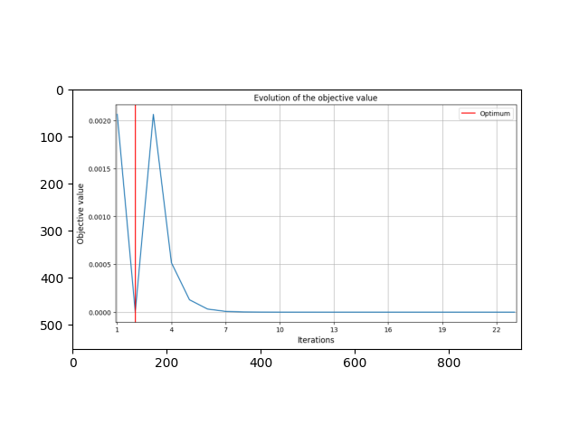
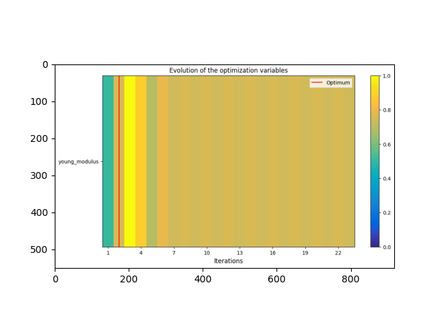
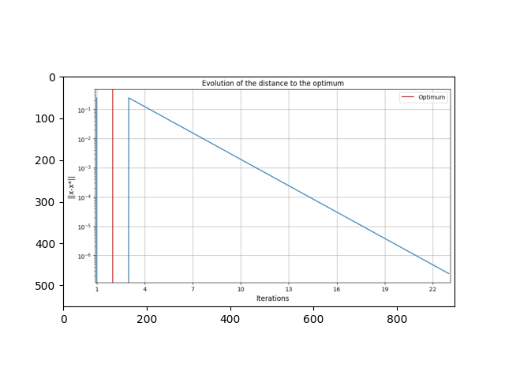
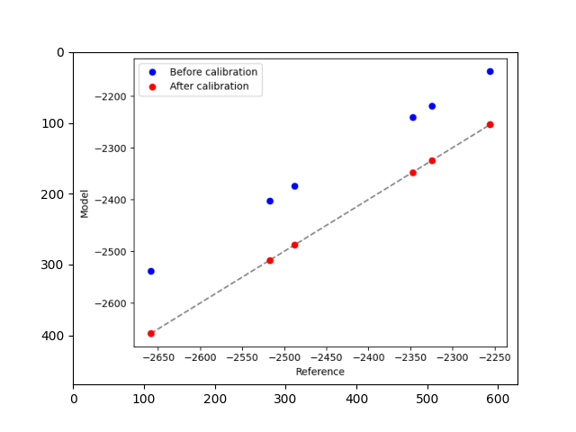

Note
Click here to download the full example code
Usage of the model calibration based on scalar outputs¶
Calibrate a model based on scalar outputs.
from __future__ import annotations
import logging
from copy import deepcopy
from gemseo.algos.design_space import DesignSpace
from gemseo.algos.opt.multi_start.settings.multi_start_settings import (
MultiStart_Settings,
)
from gemseo.algos.opt.nlopt.settings.nlopt_cobyla_settings import NLOPT_COBYLA_Settings
from gemseo_calibration.calibrator import CalibrationMetricSettings
from matplotlib.image import imread
from matplotlib.pyplot import imshow
from numpy import asarray
from numpy import atleast_1d
from vimseo import EXAMPLE_RUNS_DIR
from vimseo.api import activate_logger
from vimseo.api import create_model
from vimseo.core.model_settings import IntegratedModelSettings
from vimseo.io.space_io import SpaceToolFileIO
from vimseo.storage_management.base_storage_manager import PersistencyPolicy
from vimseo.tools.calibration.calibration_step import CalibrationStep
from vimseo.tools.calibration.calibration_step import CalibrationStepInputs
from vimseo.tools.calibration.calibration_step import CalibrationStepSettings
from vimseo.tools.calibration.input_data import CALIBRATION_INPUT_DATA
from vimseo.utilities.generate_validation_reference import (
generate_reference_from_parameter_space,
)
TARGET_YOUNG_MODULUS = 2.2e5
We first define the logger level:
activate_logger(level=logging.INFO)
We want to calibrate an analytical model of a beam with cantilever loading made of a Hook's law homogeneous elastic isotropic material. The objective is to find the best Young modulus such that the simulated and reference reaction force match.
Then, we need to create reference data. They are generated from the model to calibrate, which is biased by imposing a modified Young modulus. A parameter space is first created:
space_tool_result = SpaceToolFileIO().read(
CALIBRATION_INPUT_DATA / "experimental_space_beam_cantilever.json"
)
Out:
C:\Users\sebastien.bocquet\Dev\vimseo\.tox\doc\Lib\site-packages\pydantic\main.py:209: DeprecationWarning:
Conversion of an array with ndim > 0 to a scalar is deprecated, and will error in future. Ensure you extract a single element from your array before performing this operation. (Deprecated NumPy 1.25.)
As well as the modified model:
model_name = "BendingTestAnalytical"
load_case = "Cantilever"
target_model = create_model(
model_name,
load_case,
model_options=IntegratedModelSettings(
directory_archive_persistency=PersistencyPolicy.DELETE_ALWAYS,
directory_scratch_persistency=PersistencyPolicy.DELETE_ALWAYS,
),
)
target_model.default_input_data["young_modulus"] = atleast_1d(TARGET_YOUNG_MODULUS)
target_model.cache = None
Six samples are generated from this model, by sampling the parameter space:
reference_dataset_cantilever = generate_reference_from_parameter_space(
target_model, space_tool_result.parameter_space, n_samples=6, as_dataset=True
)
Out:
INFO - 19:46:22: Working directory is C:\Users\sebastien.bocquet\Dev\vimseo\docs\runnable_examples\08_calibration\CustomDOETool\238
INFO - 19:46:22:
INFO - 19:46:22: *** Start DOEScenario execution ***
INFO - 19:46:22: DOEScenario
INFO - 19:46:22: Disciplines: Model BendingTestAnalytical: An analytical model for the bending of a parallelepipedic beam
INFO - 19:46:22:
INFO - 19:46:22: Load case:
INFO - 19:46:22: Load case Cantilever: A cantilever load case.
INFO - 19:46:22:
INFO - 19:46:22: Boundary condition variables:
INFO - 19:46:22: ['imposed_dplt', 'relative_dplt_location']
INFO - 19:46:22:
INFO - 19:46:22: Plot parameters:
INFO - 19:46:22: {
INFO - 19:46:22: "curves": []
INFO - 19:46:22: }
INFO - 19:46:22: Load:
INFO - 19:46:22: Load(direction='', sign='', type='')
INFO - 19:46:22:
INFO - 19:46:22: Default values:
INFO - 19:46:22:
INFO - 19:46:22: Default geometrical variables:
INFO - 19:46:22: {"height": [40.0], "length": [600.0], "width": [30.0]}
INFO - 19:46:22:
INFO - 19:46:22: Default numerical variables:
INFO - 19:46:22: {}
INFO - 19:46:22:
INFO - 19:46:22: Default boundary conditions variables:
INFO - 19:46:22: {"imposed_dplt": [-5.0], "relative_dplt_location": [1.0]}
INFO - 19:46:22:
INFO - 19:46:22: Default material variables:
INFO - 19:46:22: {"nu_p": [0.3], "young_modulus": [220000.0]}
INFO - 19:46:22: model_inputs:
INFO - 19:46:22: [
INFO - 19:46:22: "length",
INFO - 19:46:22: "width",
INFO - 19:46:22: "height",
INFO - 19:46:22: "imposed_dplt",
INFO - 19:46:22: "relative_dplt_location",
INFO - 19:46:22: "young_modulus",
INFO - 19:46:22: "nu_p"
INFO - 19:46:22: ]
INFO - 19:46:22: model_outputs:
INFO - 19:46:22: [
INFO - 19:46:22: "reaction_forces",
INFO - 19:46:22: "maximum_dplt",
INFO - 19:46:22: "dplt_grid",
INFO - 19:46:22: "location_max_dplt",
INFO - 19:46:22: "dplt",
INFO - 19:46:22: "moment",
INFO - 19:46:22: "moment_grid",
INFO - 19:46:22: "dplt_at_force_location",
INFO - 19:46:22: "error_code",
INFO - 19:46:22: "model",
INFO - 19:46:22: "load_case",
INFO - 19:46:22: "description",
INFO - 19:46:22: "job_name",
INFO - 19:46:22: "persistent_result_files",
INFO - 19:46:22: "n_cpus",
INFO - 19:46:22: "date",
INFO - 19:46:22: "cpu_time",
INFO - 19:46:22: "user",
INFO - 19:46:22: "machine",
INFO - 19:46:22: "vims_git_version",
INFO - 19:46:22: "directory_archive_root",
INFO - 19:46:22: "directory_archive_job",
INFO - 19:46:22: "directory_scratch_root",
INFO - 19:46:22: "directory_scratch_job"
INFO - 19:46:22: ]
INFO - 19:46:22: MDO formulation: DisciplinaryOpt
INFO - 19:46:22: Optimization problem:
INFO - 19:46:22: minimize reaction_forces(height, imposed_dplt, width)
INFO - 19:46:22: with respect to height, imposed_dplt, width
INFO - 19:46:22: over the design space:
INFO - 19:46:22: +--------------+-------------+-------+-------------+-------+
INFO - 19:46:22: | Name | Lower bound | Value | Upper bound | Type |
INFO - 19:46:22: +--------------+-------------+-------+-------------+-------+
INFO - 19:46:22: | height | -inf | None | inf | float |
INFO - 19:46:22: | imposed_dplt | -inf | None | inf | float |
INFO - 19:46:22: | width | -inf | None | inf | float |
INFO - 19:46:22: +--------------+-------------+-------+-------------+-------+
INFO - 19:46:22: Solving optimization problem with algorithm CustomDOE:
INFO - 19:46:22: Current root directory of job directory is C:\Users\sebastien.bocquet\Dev\vimseo\docs\runnable_examples\08_calibration\default_archive.
INFO - 19:46:22: Removing job directory: default_archive\BendingTestAnalytical\Cantilever\1
INFO - 19:46:22: Current root directory of job directory is C:\Users\sebastien.bocquet\Dev\vimseo\docs\runnable_examples\08_calibration\default_archive.
INFO - 19:46:22: Removing job directory: default_archive\BendingTestAnalytical\Cantilever\1
INFO - 19:46:22: Current root directory of job directory is C:\Users\sebastien.bocquet\Dev\vimseo\docs\runnable_examples\08_calibration\default_archive.
INFO - 19:46:22: Removing job directory: default_archive\BendingTestAnalytical\Cantilever\1
INFO - 19:46:22: Current root directory of job directory is C:\Users\sebastien.bocquet\Dev\vimseo\docs\runnable_examples\08_calibration\default_archive.
INFO - 19:46:23: Removing job directory: default_archive\BendingTestAnalytical\Cantilever\1
INFO - 19:46:23: Current root directory of job directory is C:\Users\sebastien.bocquet\Dev\vimseo\docs\runnable_examples\08_calibration\default_archive.
INFO - 19:46:23: Removing job directory: default_archive\BendingTestAnalytical\Cantilever\1
INFO - 19:46:23: Current root directory of job directory is C:\Users\sebastien.bocquet\Dev\vimseo\docs\runnable_examples\08_calibration\default_archive.
INFO - 19:46:23: Removing job directory: default_archive\BendingTestAnalytical\Cantilever\1
INFO - 19:46:23: Current root directory of job directory is C:\Users\sebastien.bocquet\Dev\vimseo\docs\runnable_examples\08_calibration\default_archive.
INFO - 19:46:23: Removing job directory: default_archive\BendingTestAnalytical\Cantilever\1
INFO - 19:46:23: Current root directory of job directory is C:\Users\sebastien.bocquet\Dev\vimseo\docs\runnable_examples\08_calibration\default_archive.
INFO - 19:46:23: Removing job directory: default_archive\BendingTestAnalytical\Cantilever\1
INFO - 19:46:23: Current root directory of job directory is C:\Users\sebastien.bocquet\Dev\vimseo\docs\runnable_examples\08_calibration\default_archive.
INFO - 19:46:23: Removing job directory: default_archive\BendingTestAnalytical\Cantilever\1
INFO - 19:46:23: Current root directory of job directory is C:\Users\sebastien.bocquet\Dev\vimseo\docs\runnable_examples\08_calibration\default_archive.
INFO - 19:46:23: Removing job directory: default_archive\BendingTestAnalytical\Cantilever\1
INFO - 19:46:23: Current root directory of job directory is C:\Users\sebastien.bocquet\Dev\vimseo\docs\runnable_examples\08_calibration\default_archive.
INFO - 19:46:23: Removing job directory: default_archive\BendingTestAnalytical\Cantilever\1
INFO - 19:46:23: Current root directory of job directory is C:\Users\sebastien.bocquet\Dev\vimseo\docs\runnable_examples\08_calibration\default_archive.
INFO - 19:46:23: Removing job directory: default_archive\BendingTestAnalytical\Cantilever\1
INFO - 19:46:23: Current root directory of job directory is C:\Users\sebastien.bocquet\Dev\vimseo\docs\runnable_examples\08_calibration\default_archive.
INFO - 19:46:23: Removing job directory: default_archive\BendingTestAnalytical\Cantilever\1
INFO - 19:46:23: Current root directory of job directory is C:\Users\sebastien.bocquet\Dev\vimseo\docs\runnable_examples\08_calibration\default_archive.
INFO - 19:46:23: Removing job directory: default_archive\BendingTestAnalytical\Cantilever\1
INFO - 19:46:23: Current root directory of job directory is C:\Users\sebastien.bocquet\Dev\vimseo\docs\runnable_examples\08_calibration\default_archive.
INFO - 19:46:23: Removing job directory: default_archive\BendingTestAnalytical\Cantilever\1
INFO - 19:46:23: Current root directory of job directory is C:\Users\sebastien.bocquet\Dev\vimseo\docs\runnable_examples\08_calibration\default_archive.
INFO - 19:46:23: Removing job directory: default_archive\BendingTestAnalytical\Cantilever\1
INFO - 19:46:23: Current root directory of job directory is C:\Users\sebastien.bocquet\Dev\vimseo\docs\runnable_examples\08_calibration\default_archive.
INFO - 19:46:23: Removing job directory: default_archive\BendingTestAnalytical\Cantilever\1
INFO - 19:46:23: Current root directory of job directory is C:\Users\sebastien.bocquet\Dev\vimseo\docs\runnable_examples\08_calibration\default_archive.
INFO - 19:46:23: Removing job directory: default_archive\BendingTestAnalytical\Cantilever\1
INFO - 19:46:23: Current root directory of job directory is C:\Users\sebastien.bocquet\Dev\vimseo\docs\runnable_examples\08_calibration\default_archive.
INFO - 19:46:23: Removing job directory: default_archive\BendingTestAnalytical\Cantilever\1
INFO - 19:46:23: Current root directory of job directory is C:\Users\sebastien.bocquet\Dev\vimseo\docs\runnable_examples\08_calibration\default_archive.
INFO - 19:46:24: Removing job directory: default_archive\BendingTestAnalytical\Cantilever\1
INFO - 19:46:24: Current root directory of job directory is C:\Users\sebastien.bocquet\Dev\vimseo\docs\runnable_examples\08_calibration\default_archive.
INFO - 19:46:24: Removing job directory: default_archive\BendingTestAnalytical\Cantilever\1
INFO - 19:46:24: Current root directory of job directory is C:\Users\sebastien.bocquet\Dev\vimseo\docs\runnable_examples\08_calibration\default_archive.
INFO - 19:46:24: Removing job directory: default_archive\BendingTestAnalytical\Cantilever\1
INFO - 19:46:24: Current root directory of job directory is C:\Users\sebastien.bocquet\Dev\vimseo\docs\runnable_examples\08_calibration\default_archive.
INFO - 19:46:24: Removing job directory: default_archive\BendingTestAnalytical\Cantilever\1
INFO - 19:46:24: Current root directory of job directory is C:\Users\sebastien.bocquet\Dev\vimseo\docs\runnable_examples\08_calibration\default_archive.
INFO - 19:46:24: Removing job directory: default_archive\BendingTestAnalytical\Cantilever\1
INFO - 19:46:24: 17%|█▋ | 1/6 [00:01<00:07, 39.45 it/min, obj=-2.32e+3]
INFO - 19:46:24: Current root directory of job directory is C:\Users\sebastien.bocquet\Dev\vimseo\docs\runnable_examples\08_calibration\default_archive.
INFO - 19:46:24: Removing job directory: default_archive\BendingTestAnalytical\Cantilever\1
INFO - 19:46:24: Current root directory of job directory is C:\Users\sebastien.bocquet\Dev\vimseo\docs\runnable_examples\08_calibration\default_archive.
INFO - 19:46:24: Removing job directory: default_archive\BendingTestAnalytical\Cantilever\1
INFO - 19:46:24: Current root directory of job directory is C:\Users\sebastien.bocquet\Dev\vimseo\docs\runnable_examples\08_calibration\default_archive.
INFO - 19:46:24: Removing job directory: default_archive\BendingTestAnalytical\Cantilever\1
INFO - 19:46:24: Current root directory of job directory is C:\Users\sebastien.bocquet\Dev\vimseo\docs\runnable_examples\08_calibration\default_archive.
INFO - 19:46:24: Removing job directory: default_archive\BendingTestAnalytical\Cantilever\1
INFO - 19:46:24: Current root directory of job directory is C:\Users\sebastien.bocquet\Dev\vimseo\docs\runnable_examples\08_calibration\default_archive.
INFO - 19:46:24: Removing job directory: default_archive\BendingTestAnalytical\Cantilever\1
INFO - 19:46:24: Current root directory of job directory is C:\Users\sebastien.bocquet\Dev\vimseo\docs\runnable_examples\08_calibration\default_archive.
INFO - 19:46:24: Removing job directory: default_archive\BendingTestAnalytical\Cantilever\1
INFO - 19:46:24: Current root directory of job directory is C:\Users\sebastien.bocquet\Dev\vimseo\docs\runnable_examples\08_calibration\default_archive.
INFO - 19:46:24: Removing job directory: default_archive\BendingTestAnalytical\Cantilever\1
INFO - 19:46:24: Current root directory of job directory is C:\Users\sebastien.bocquet\Dev\vimseo\docs\runnable_examples\08_calibration\default_archive.
INFO - 19:46:24: Removing job directory: default_archive\BendingTestAnalytical\Cantilever\1
INFO - 19:46:24: Current root directory of job directory is C:\Users\sebastien.bocquet\Dev\vimseo\docs\runnable_examples\08_calibration\default_archive.
INFO - 19:46:24: Removing job directory: default_archive\BendingTestAnalytical\Cantilever\1
INFO - 19:46:24: Current root directory of job directory is C:\Users\sebastien.bocquet\Dev\vimseo\docs\runnable_examples\08_calibration\default_archive.
INFO - 19:46:24: Removing job directory: default_archive\BendingTestAnalytical\Cantilever\1
INFO - 19:46:24: Current root directory of job directory is C:\Users\sebastien.bocquet\Dev\vimseo\docs\runnable_examples\08_calibration\default_archive.
INFO - 19:46:24: Removing job directory: default_archive\BendingTestAnalytical\Cantilever\1
INFO - 19:46:24: Current root directory of job directory is C:\Users\sebastien.bocquet\Dev\vimseo\docs\runnable_examples\08_calibration\default_archive.
INFO - 19:46:24: Removing job directory: default_archive\BendingTestAnalytical\Cantilever\1
INFO - 19:46:24: Current root directory of job directory is C:\Users\sebastien.bocquet\Dev\vimseo\docs\runnable_examples\08_calibration\default_archive.
INFO - 19:46:25: Removing job directory: default_archive\BendingTestAnalytical\Cantilever\1
INFO - 19:46:25: Current root directory of job directory is C:\Users\sebastien.bocquet\Dev\vimseo\docs\runnable_examples\08_calibration\default_archive.
INFO - 19:46:25: Removing job directory: default_archive\BendingTestAnalytical\Cantilever\1
INFO - 19:46:25: Current root directory of job directory is C:\Users\sebastien.bocquet\Dev\vimseo\docs\runnable_examples\08_calibration\default_archive.
INFO - 19:46:25: Removing job directory: default_archive\BendingTestAnalytical\Cantilever\1
INFO - 19:46:25: Current root directory of job directory is C:\Users\sebastien.bocquet\Dev\vimseo\docs\runnable_examples\08_calibration\default_archive.
INFO - 19:46:25: Removing job directory: default_archive\BendingTestAnalytical\Cantilever\1
INFO - 19:46:25: Current root directory of job directory is C:\Users\sebastien.bocquet\Dev\vimseo\docs\runnable_examples\08_calibration\default_archive.
INFO - 19:46:25: Removing job directory: default_archive\BendingTestAnalytical\Cantilever\1
INFO - 19:46:25: Current root directory of job directory is C:\Users\sebastien.bocquet\Dev\vimseo\docs\runnable_examples\08_calibration\default_archive.
INFO - 19:46:25: Removing job directory: default_archive\BendingTestAnalytical\Cantilever\1
INFO - 19:46:25: Current root directory of job directory is C:\Users\sebastien.bocquet\Dev\vimseo\docs\runnable_examples\08_calibration\default_archive.
INFO - 19:46:25: Removing job directory: default_archive\BendingTestAnalytical\Cantilever\1
INFO - 19:46:25: Current root directory of job directory is C:\Users\sebastien.bocquet\Dev\vimseo\docs\runnable_examples\08_calibration\default_archive.
INFO - 19:46:25: Removing job directory: default_archive\BendingTestAnalytical\Cantilever\1
INFO - 19:46:25: Current root directory of job directory is C:\Users\sebastien.bocquet\Dev\vimseo\docs\runnable_examples\08_calibration\default_archive.
INFO - 19:46:25: Removing job directory: default_archive\BendingTestAnalytical\Cantilever\1
INFO - 19:46:25: Current root directory of job directory is C:\Users\sebastien.bocquet\Dev\vimseo\docs\runnable_examples\08_calibration\default_archive.
INFO - 19:46:25: Removing job directory: default_archive\BendingTestAnalytical\Cantilever\1
INFO - 19:46:25: Current root directory of job directory is C:\Users\sebastien.bocquet\Dev\vimseo\docs\runnable_examples\08_calibration\default_archive.
INFO - 19:46:25: Removing job directory: default_archive\BendingTestAnalytical\Cantilever\1
INFO - 19:46:25: Current root directory of job directory is C:\Users\sebastien.bocquet\Dev\vimseo\docs\runnable_examples\08_calibration\default_archive.
INFO - 19:46:25: Removing job directory: default_archive\BendingTestAnalytical\Cantilever\1
INFO - 19:46:25: 33%|███▎ | 2/6 [00:02<00:05, 40.41 it/min, obj=-2.52e+3]
INFO - 19:46:25: Current root directory of job directory is C:\Users\sebastien.bocquet\Dev\vimseo\docs\runnable_examples\08_calibration\default_archive.
INFO - 19:46:25: Removing job directory: default_archive\BendingTestAnalytical\Cantilever\1
INFO - 19:46:25: Current root directory of job directory is C:\Users\sebastien.bocquet\Dev\vimseo\docs\runnable_examples\08_calibration\default_archive.
INFO - 19:46:25: Removing job directory: default_archive\BendingTestAnalytical\Cantilever\1
INFO - 19:46:25: Current root directory of job directory is C:\Users\sebastien.bocquet\Dev\vimseo\docs\runnable_examples\08_calibration\default_archive.
INFO - 19:46:25: Removing job directory: default_archive\BendingTestAnalytical\Cantilever\1
INFO - 19:46:25: Current root directory of job directory is C:\Users\sebastien.bocquet\Dev\vimseo\docs\runnable_examples\08_calibration\default_archive.
INFO - 19:46:25: Removing job directory: default_archive\BendingTestAnalytical\Cantilever\1
INFO - 19:46:25: Current root directory of job directory is C:\Users\sebastien.bocquet\Dev\vimseo\docs\runnable_examples\08_calibration\default_archive.
INFO - 19:46:25: Removing job directory: default_archive\BendingTestAnalytical\Cantilever\1
INFO - 19:46:25: Current root directory of job directory is C:\Users\sebastien.bocquet\Dev\vimseo\docs\runnable_examples\08_calibration\default_archive.
INFO - 19:46:26: Removing job directory: default_archive\BendingTestAnalytical\Cantilever\1
INFO - 19:46:26: Current root directory of job directory is C:\Users\sebastien.bocquet\Dev\vimseo\docs\runnable_examples\08_calibration\default_archive.
INFO - 19:46:26: Removing job directory: default_archive\BendingTestAnalytical\Cantilever\1
INFO - 19:46:26: Current root directory of job directory is C:\Users\sebastien.bocquet\Dev\vimseo\docs\runnable_examples\08_calibration\default_archive.
INFO - 19:46:26: Removing job directory: default_archive\BendingTestAnalytical\Cantilever\1
INFO - 19:46:26: Current root directory of job directory is C:\Users\sebastien.bocquet\Dev\vimseo\docs\runnable_examples\08_calibration\default_archive.
INFO - 19:46:26: Removing job directory: default_archive\BendingTestAnalytical\Cantilever\1
INFO - 19:46:26: Current root directory of job directory is C:\Users\sebastien.bocquet\Dev\vimseo\docs\runnable_examples\08_calibration\default_archive.
INFO - 19:46:26: Removing job directory: default_archive\BendingTestAnalytical\Cantilever\1
INFO - 19:46:26: Current root directory of job directory is C:\Users\sebastien.bocquet\Dev\vimseo\docs\runnable_examples\08_calibration\default_archive.
INFO - 19:46:26: Removing job directory: default_archive\BendingTestAnalytical\Cantilever\1
INFO - 19:46:26: Current root directory of job directory is C:\Users\sebastien.bocquet\Dev\vimseo\docs\runnable_examples\08_calibration\default_archive.
INFO - 19:46:26: Removing job directory: default_archive\BendingTestAnalytical\Cantilever\1
INFO - 19:46:26: Current root directory of job directory is C:\Users\sebastien.bocquet\Dev\vimseo\docs\runnable_examples\08_calibration\default_archive.
INFO - 19:46:26: Removing job directory: default_archive\BendingTestAnalytical\Cantilever\1
INFO - 19:46:26: Current root directory of job directory is C:\Users\sebastien.bocquet\Dev\vimseo\docs\runnable_examples\08_calibration\default_archive.
INFO - 19:46:26: Removing job directory: default_archive\BendingTestAnalytical\Cantilever\1
INFO - 19:46:26: Current root directory of job directory is C:\Users\sebastien.bocquet\Dev\vimseo\docs\runnable_examples\08_calibration\default_archive.
INFO - 19:46:26: Removing job directory: default_archive\BendingTestAnalytical\Cantilever\1
INFO - 19:46:26: Current root directory of job directory is C:\Users\sebastien.bocquet\Dev\vimseo\docs\runnable_examples\08_calibration\default_archive.
INFO - 19:46:26: Removing job directory: default_archive\BendingTestAnalytical\Cantilever\1
INFO - 19:46:26: Current root directory of job directory is C:\Users\sebastien.bocquet\Dev\vimseo\docs\runnable_examples\08_calibration\default_archive.
INFO - 19:46:26: Removing job directory: default_archive\BendingTestAnalytical\Cantilever\1
INFO - 19:46:26: Current root directory of job directory is C:\Users\sebastien.bocquet\Dev\vimseo\docs\runnable_examples\08_calibration\default_archive.
INFO - 19:46:26: Removing job directory: default_archive\BendingTestAnalytical\Cantilever\1
INFO - 19:46:26: Current root directory of job directory is C:\Users\sebastien.bocquet\Dev\vimseo\docs\runnable_examples\08_calibration\default_archive.
INFO - 19:46:26: Removing job directory: default_archive\BendingTestAnalytical\Cantilever\1
INFO - 19:46:26: Current root directory of job directory is C:\Users\sebastien.bocquet\Dev\vimseo\docs\runnable_examples\08_calibration\default_archive.
INFO - 19:46:26: Removing job directory: default_archive\BendingTestAnalytical\Cantilever\1
INFO - 19:46:26: Current root directory of job directory is C:\Users\sebastien.bocquet\Dev\vimseo\docs\runnable_examples\08_calibration\default_archive.
INFO - 19:46:26: Removing job directory: default_archive\BendingTestAnalytical\Cantilever\1
INFO - 19:46:26: Current root directory of job directory is C:\Users\sebastien.bocquet\Dev\vimseo\docs\runnable_examples\08_calibration\default_archive.
INFO - 19:46:27: Removing job directory: default_archive\BendingTestAnalytical\Cantilever\1
INFO - 19:46:27: Current root directory of job directory is C:\Users\sebastien.bocquet\Dev\vimseo\docs\runnable_examples\08_calibration\default_archive.
INFO - 19:46:27: Removing job directory: default_archive\BendingTestAnalytical\Cantilever\1
INFO - 19:46:27: Current root directory of job directory is C:\Users\sebastien.bocquet\Dev\vimseo\docs\runnable_examples\08_calibration\default_archive.
INFO - 19:46:27: Removing job directory: default_archive\BendingTestAnalytical\Cantilever\1
INFO - 19:46:27: 50%|█████ | 3/6 [00:04<00:04, 40.67 it/min, obj=-2.66e+3]
INFO - 19:46:27: Current root directory of job directory is C:\Users\sebastien.bocquet\Dev\vimseo\docs\runnable_examples\08_calibration\default_archive.
INFO - 19:46:27: Removing job directory: default_archive\BendingTestAnalytical\Cantilever\1
INFO - 19:46:27: Current root directory of job directory is C:\Users\sebastien.bocquet\Dev\vimseo\docs\runnable_examples\08_calibration\default_archive.
INFO - 19:46:27: Removing job directory: default_archive\BendingTestAnalytical\Cantilever\1
INFO - 19:46:27: Current root directory of job directory is C:\Users\sebastien.bocquet\Dev\vimseo\docs\runnable_examples\08_calibration\default_archive.
INFO - 19:46:27: Removing job directory: default_archive\BendingTestAnalytical\Cantilever\1
INFO - 19:46:27: Current root directory of job directory is C:\Users\sebastien.bocquet\Dev\vimseo\docs\runnable_examples\08_calibration\default_archive.
INFO - 19:46:27: Removing job directory: default_archive\BendingTestAnalytical\Cantilever\1
INFO - 19:46:27: Current root directory of job directory is C:\Users\sebastien.bocquet\Dev\vimseo\docs\runnable_examples\08_calibration\default_archive.
INFO - 19:46:27: Removing job directory: default_archive\BendingTestAnalytical\Cantilever\1
INFO - 19:46:27: Current root directory of job directory is C:\Users\sebastien.bocquet\Dev\vimseo\docs\runnable_examples\08_calibration\default_archive.
INFO - 19:46:27: Removing job directory: default_archive\BendingTestAnalytical\Cantilever\1
INFO - 19:46:27: Current root directory of job directory is C:\Users\sebastien.bocquet\Dev\vimseo\docs\runnable_examples\08_calibration\default_archive.
INFO - 19:46:27: Removing job directory: default_archive\BendingTestAnalytical\Cantilever\1
INFO - 19:46:27: Current root directory of job directory is C:\Users\sebastien.bocquet\Dev\vimseo\docs\runnable_examples\08_calibration\default_archive.
INFO - 19:46:27: Removing job directory: default_archive\BendingTestAnalytical\Cantilever\1
INFO - 19:46:27: Current root directory of job directory is C:\Users\sebastien.bocquet\Dev\vimseo\docs\runnable_examples\08_calibration\default_archive.
INFO - 19:46:27: Removing job directory: default_archive\BendingTestAnalytical\Cantilever\1
INFO - 19:46:27: Current root directory of job directory is C:\Users\sebastien.bocquet\Dev\vimseo\docs\runnable_examples\08_calibration\default_archive.
INFO - 19:46:27: Removing job directory: default_archive\BendingTestAnalytical\Cantilever\1
INFO - 19:46:27: Current root directory of job directory is C:\Users\sebastien.bocquet\Dev\vimseo\docs\runnable_examples\08_calibration\default_archive.
INFO - 19:46:27: Removing job directory: default_archive\BendingTestAnalytical\Cantilever\1
INFO - 19:46:27: Current root directory of job directory is C:\Users\sebastien.bocquet\Dev\vimseo\docs\runnable_examples\08_calibration\default_archive.
INFO - 19:46:27: Removing job directory: default_archive\BendingTestAnalytical\Cantilever\1
INFO - 19:46:27: Current root directory of job directory is C:\Users\sebastien.bocquet\Dev\vimseo\docs\runnable_examples\08_calibration\default_archive.
INFO - 19:46:28: Removing job directory: default_archive\BendingTestAnalytical\Cantilever\1
INFO - 19:46:28: Current root directory of job directory is C:\Users\sebastien.bocquet\Dev\vimseo\docs\runnable_examples\08_calibration\default_archive.
INFO - 19:46:28: Removing job directory: default_archive\BendingTestAnalytical\Cantilever\1
INFO - 19:46:28: Current root directory of job directory is C:\Users\sebastien.bocquet\Dev\vimseo\docs\runnable_examples\08_calibration\default_archive.
INFO - 19:46:28: Removing job directory: default_archive\BendingTestAnalytical\Cantilever\1
INFO - 19:46:28: Current root directory of job directory is C:\Users\sebastien.bocquet\Dev\vimseo\docs\runnable_examples\08_calibration\default_archive.
INFO - 19:46:28: Removing job directory: default_archive\BendingTestAnalytical\Cantilever\1
INFO - 19:46:28: Current root directory of job directory is C:\Users\sebastien.bocquet\Dev\vimseo\docs\runnable_examples\08_calibration\default_archive.
INFO - 19:46:28: Removing job directory: default_archive\BendingTestAnalytical\Cantilever\1
INFO - 19:46:28: Current root directory of job directory is C:\Users\sebastien.bocquet\Dev\vimseo\docs\runnable_examples\08_calibration\default_archive.
INFO - 19:46:28: Removing job directory: default_archive\BendingTestAnalytical\Cantilever\1
INFO - 19:46:28: Current root directory of job directory is C:\Users\sebastien.bocquet\Dev\vimseo\docs\runnable_examples\08_calibration\default_archive.
INFO - 19:46:28: Removing job directory: default_archive\BendingTestAnalytical\Cantilever\1
INFO - 19:46:28: Current root directory of job directory is C:\Users\sebastien.bocquet\Dev\vimseo\docs\runnable_examples\08_calibration\default_archive.
INFO - 19:46:28: Removing job directory: default_archive\BendingTestAnalytical\Cantilever\1
INFO - 19:46:28: Current root directory of job directory is C:\Users\sebastien.bocquet\Dev\vimseo\docs\runnable_examples\08_calibration\default_archive.
INFO - 19:46:28: Removing job directory: default_archive\BendingTestAnalytical\Cantilever\1
INFO - 19:46:28: Current root directory of job directory is C:\Users\sebastien.bocquet\Dev\vimseo\docs\runnable_examples\08_calibration\default_archive.
INFO - 19:46:28: Removing job directory: default_archive\BendingTestAnalytical\Cantilever\1
INFO - 19:46:28: Current root directory of job directory is C:\Users\sebastien.bocquet\Dev\vimseo\docs\runnable_examples\08_calibration\default_archive.
INFO - 19:46:28: Removing job directory: default_archive\BendingTestAnalytical\Cantilever\1
INFO - 19:46:28: Current root directory of job directory is C:\Users\sebastien.bocquet\Dev\vimseo\docs\runnable_examples\08_calibration\default_archive.
INFO - 19:46:28: Removing job directory: default_archive\BendingTestAnalytical\Cantilever\1
INFO - 19:46:28: 67%|██████▋ | 4/6 [00:05<00:02, 40.45 it/min, obj=-2.49e+3]
INFO - 19:46:28: Current root directory of job directory is C:\Users\sebastien.bocquet\Dev\vimseo\docs\runnable_examples\08_calibration\default_archive.
INFO - 19:46:28: Removing job directory: default_archive\BendingTestAnalytical\Cantilever\1
INFO - 19:46:28: Current root directory of job directory is C:\Users\sebastien.bocquet\Dev\vimseo\docs\runnable_examples\08_calibration\default_archive.
INFO - 19:46:28: Removing job directory: default_archive\BendingTestAnalytical\Cantilever\1
INFO - 19:46:28: Current root directory of job directory is C:\Users\sebastien.bocquet\Dev\vimseo\docs\runnable_examples\08_calibration\default_archive.
INFO - 19:46:28: Removing job directory: default_archive\BendingTestAnalytical\Cantilever\1
INFO - 19:46:28: Current root directory of job directory is C:\Users\sebastien.bocquet\Dev\vimseo\docs\runnable_examples\08_calibration\default_archive.
INFO - 19:46:28: Removing job directory: default_archive\BendingTestAnalytical\Cantilever\1
INFO - 19:46:28: Current root directory of job directory is C:\Users\sebastien.bocquet\Dev\vimseo\docs\runnable_examples\08_calibration\default_archive.
INFO - 19:46:28: Removing job directory: default_archive\BendingTestAnalytical\Cantilever\1
INFO - 19:46:28: Current root directory of job directory is C:\Users\sebastien.bocquet\Dev\vimseo\docs\runnable_examples\08_calibration\default_archive.
INFO - 19:46:29: Removing job directory: default_archive\BendingTestAnalytical\Cantilever\1
INFO - 19:46:29: Current root directory of job directory is C:\Users\sebastien.bocquet\Dev\vimseo\docs\runnable_examples\08_calibration\default_archive.
INFO - 19:46:29: Removing job directory: default_archive\BendingTestAnalytical\Cantilever\1
INFO - 19:46:29: Current root directory of job directory is C:\Users\sebastien.bocquet\Dev\vimseo\docs\runnable_examples\08_calibration\default_archive.
INFO - 19:46:29: Removing job directory: default_archive\BendingTestAnalytical\Cantilever\1
INFO - 19:46:29: Current root directory of job directory is C:\Users\sebastien.bocquet\Dev\vimseo\docs\runnable_examples\08_calibration\default_archive.
INFO - 19:46:29: Removing job directory: default_archive\BendingTestAnalytical\Cantilever\1
INFO - 19:46:29: Current root directory of job directory is C:\Users\sebastien.bocquet\Dev\vimseo\docs\runnable_examples\08_calibration\default_archive.
INFO - 19:46:29: Removing job directory: default_archive\BendingTestAnalytical\Cantilever\1
INFO - 19:46:29: Current root directory of job directory is C:\Users\sebastien.bocquet\Dev\vimseo\docs\runnable_examples\08_calibration\default_archive.
INFO - 19:46:29: Removing job directory: default_archive\BendingTestAnalytical\Cantilever\1
INFO - 19:46:29: Current root directory of job directory is C:\Users\sebastien.bocquet\Dev\vimseo\docs\runnable_examples\08_calibration\default_archive.
INFO - 19:46:29: Removing job directory: default_archive\BendingTestAnalytical\Cantilever\1
INFO - 19:46:29: Current root directory of job directory is C:\Users\sebastien.bocquet\Dev\vimseo\docs\runnable_examples\08_calibration\default_archive.
INFO - 19:46:29: Removing job directory: default_archive\BendingTestAnalytical\Cantilever\1
INFO - 19:46:29: Current root directory of job directory is C:\Users\sebastien.bocquet\Dev\vimseo\docs\runnable_examples\08_calibration\default_archive.
INFO - 19:46:29: Removing job directory: default_archive\BendingTestAnalytical\Cantilever\1
INFO - 19:46:29: Current root directory of job directory is C:\Users\sebastien.bocquet\Dev\vimseo\docs\runnable_examples\08_calibration\default_archive.
INFO - 19:46:29: Removing job directory: default_archive\BendingTestAnalytical\Cantilever\1
INFO - 19:46:29: Current root directory of job directory is C:\Users\sebastien.bocquet\Dev\vimseo\docs\runnable_examples\08_calibration\default_archive.
INFO - 19:46:29: Removing job directory: default_archive\BendingTestAnalytical\Cantilever\1
INFO - 19:46:29: Current root directory of job directory is C:\Users\sebastien.bocquet\Dev\vimseo\docs\runnable_examples\08_calibration\default_archive.
INFO - 19:46:29: Removing job directory: default_archive\BendingTestAnalytical\Cantilever\1
INFO - 19:46:29: Current root directory of job directory is C:\Users\sebastien.bocquet\Dev\vimseo\docs\runnable_examples\08_calibration\default_archive.
INFO - 19:46:29: Removing job directory: default_archive\BendingTestAnalytical\Cantilever\1
INFO - 19:46:29: Current root directory of job directory is C:\Users\sebastien.bocquet\Dev\vimseo\docs\runnable_examples\08_calibration\default_archive.
INFO - 19:46:29: Removing job directory: default_archive\BendingTestAnalytical\Cantilever\1
INFO - 19:46:29: Current root directory of job directory is C:\Users\sebastien.bocquet\Dev\vimseo\docs\runnable_examples\08_calibration\default_archive.
INFO - 19:46:29: Removing job directory: default_archive\BendingTestAnalytical\Cantilever\1
INFO - 19:46:29: Current root directory of job directory is C:\Users\sebastien.bocquet\Dev\vimseo\docs\runnable_examples\08_calibration\default_archive.
INFO - 19:46:29: Removing job directory: default_archive\BendingTestAnalytical\Cantilever\1
INFO - 19:46:29: Current root directory of job directory is C:\Users\sebastien.bocquet\Dev\vimseo\docs\runnable_examples\08_calibration\default_archive.
INFO - 19:46:29: Removing job directory: default_archive\BendingTestAnalytical\Cantilever\1
INFO - 19:46:29: Current root directory of job directory is C:\Users\sebastien.bocquet\Dev\vimseo\docs\runnable_examples\08_calibration\default_archive.
INFO - 19:46:29: Removing job directory: default_archive\BendingTestAnalytical\Cantilever\1
INFO - 19:46:29: Current root directory of job directory is C:\Users\sebastien.bocquet\Dev\vimseo\docs\runnable_examples\08_calibration\default_archive.
INFO - 19:46:29: Removing job directory: default_archive\BendingTestAnalytical\Cantilever\1
INFO - 19:46:29: 83%|████████▎ | 5/6 [00:07<00:01, 41.48 it/min, obj=-2.26e+3]
INFO - 19:46:29: Current root directory of job directory is C:\Users\sebastien.bocquet\Dev\vimseo\docs\runnable_examples\08_calibration\default_archive.
INFO - 19:46:30: Removing job directory: default_archive\BendingTestAnalytical\Cantilever\1
INFO - 19:46:30: Current root directory of job directory is C:\Users\sebastien.bocquet\Dev\vimseo\docs\runnable_examples\08_calibration\default_archive.
INFO - 19:46:30: Removing job directory: default_archive\BendingTestAnalytical\Cantilever\1
INFO - 19:46:30: Current root directory of job directory is C:\Users\sebastien.bocquet\Dev\vimseo\docs\runnable_examples\08_calibration\default_archive.
INFO - 19:46:30: Removing job directory: default_archive\BendingTestAnalytical\Cantilever\1
INFO - 19:46:30: Current root directory of job directory is C:\Users\sebastien.bocquet\Dev\vimseo\docs\runnable_examples\08_calibration\default_archive.
INFO - 19:46:30: Removing job directory: default_archive\BendingTestAnalytical\Cantilever\1
INFO - 19:46:30: Current root directory of job directory is C:\Users\sebastien.bocquet\Dev\vimseo\docs\runnable_examples\08_calibration\default_archive.
INFO - 19:46:30: Removing job directory: default_archive\BendingTestAnalytical\Cantilever\1
INFO - 19:46:30: Current root directory of job directory is C:\Users\sebastien.bocquet\Dev\vimseo\docs\runnable_examples\08_calibration\default_archive.
INFO - 19:46:30: Removing job directory: default_archive\BendingTestAnalytical\Cantilever\1
INFO - 19:46:30: Current root directory of job directory is C:\Users\sebastien.bocquet\Dev\vimseo\docs\runnable_examples\08_calibration\default_archive.
INFO - 19:46:30: Removing job directory: default_archive\BendingTestAnalytical\Cantilever\1
INFO - 19:46:30: Current root directory of job directory is C:\Users\sebastien.bocquet\Dev\vimseo\docs\runnable_examples\08_calibration\default_archive.
INFO - 19:46:30: Removing job directory: default_archive\BendingTestAnalytical\Cantilever\1
INFO - 19:46:30: Current root directory of job directory is C:\Users\sebastien.bocquet\Dev\vimseo\docs\runnable_examples\08_calibration\default_archive.
INFO - 19:46:30: Removing job directory: default_archive\BendingTestAnalytical\Cantilever\1
INFO - 19:46:30: Current root directory of job directory is C:\Users\sebastien.bocquet\Dev\vimseo\docs\runnable_examples\08_calibration\default_archive.
INFO - 19:46:30: Removing job directory: default_archive\BendingTestAnalytical\Cantilever\1
INFO - 19:46:30: Current root directory of job directory is C:\Users\sebastien.bocquet\Dev\vimseo\docs\runnable_examples\08_calibration\default_archive.
INFO - 19:46:30: Removing job directory: default_archive\BendingTestAnalytical\Cantilever\1
INFO - 19:46:30: Current root directory of job directory is C:\Users\sebastien.bocquet\Dev\vimseo\docs\runnable_examples\08_calibration\default_archive.
INFO - 19:46:30: Removing job directory: default_archive\BendingTestAnalytical\Cantilever\1
INFO - 19:46:30: Current root directory of job directory is C:\Users\sebastien.bocquet\Dev\vimseo\docs\runnable_examples\08_calibration\default_archive.
INFO - 19:46:30: Removing job directory: default_archive\BendingTestAnalytical\Cantilever\1
INFO - 19:46:30: Current root directory of job directory is C:\Users\sebastien.bocquet\Dev\vimseo\docs\runnable_examples\08_calibration\default_archive.
INFO - 19:46:30: Removing job directory: default_archive\BendingTestAnalytical\Cantilever\1
INFO - 19:46:30: Current root directory of job directory is C:\Users\sebastien.bocquet\Dev\vimseo\docs\runnable_examples\08_calibration\default_archive.
INFO - 19:46:30: Removing job directory: default_archive\BendingTestAnalytical\Cantilever\1
INFO - 19:46:30: Current root directory of job directory is C:\Users\sebastien.bocquet\Dev\vimseo\docs\runnable_examples\08_calibration\default_archive.
INFO - 19:46:30: Removing job directory: default_archive\BendingTestAnalytical\Cantilever\1
INFO - 19:46:30: Current root directory of job directory is C:\Users\sebastien.bocquet\Dev\vimseo\docs\runnable_examples\08_calibration\default_archive.
INFO - 19:46:30: Removing job directory: default_archive\BendingTestAnalytical\Cantilever\1
INFO - 19:46:30: Current root directory of job directory is C:\Users\sebastien.bocquet\Dev\vimseo\docs\runnable_examples\08_calibration\default_archive.
INFO - 19:46:30: Removing job directory: default_archive\BendingTestAnalytical\Cantilever\1
INFO - 19:46:30: Current root directory of job directory is C:\Users\sebastien.bocquet\Dev\vimseo\docs\runnable_examples\08_calibration\default_archive.
INFO - 19:46:30: Removing job directory: default_archive\BendingTestAnalytical\Cantilever\1
INFO - 19:46:30: Current root directory of job directory is C:\Users\sebastien.bocquet\Dev\vimseo\docs\runnable_examples\08_calibration\default_archive.
INFO - 19:46:30: Removing job directory: default_archive\BendingTestAnalytical\Cantilever\1
INFO - 19:46:30: Current root directory of job directory is C:\Users\sebastien.bocquet\Dev\vimseo\docs\runnable_examples\08_calibration\default_archive.
INFO - 19:46:31: Removing job directory: default_archive\BendingTestAnalytical\Cantilever\1
INFO - 19:46:31: Current root directory of job directory is C:\Users\sebastien.bocquet\Dev\vimseo\docs\runnable_examples\08_calibration\default_archive.
INFO - 19:46:31: Removing job directory: default_archive\BendingTestAnalytical\Cantilever\1
INFO - 19:46:31: Current root directory of job directory is C:\Users\sebastien.bocquet\Dev\vimseo\docs\runnable_examples\08_calibration\default_archive.
INFO - 19:46:31: Removing job directory: default_archive\BendingTestAnalytical\Cantilever\1
INFO - 19:46:31: Current root directory of job directory is C:\Users\sebastien.bocquet\Dev\vimseo\docs\runnable_examples\08_calibration\default_archive.
INFO - 19:46:31: Removing job directory: default_archive\BendingTestAnalytical\Cantilever\1
INFO - 19:46:31: 100%|██████████| 6/6 [00:08<00:00, 42.26 it/min, obj=-2.35e+3]
INFO - 19:46:31: Optimization result:
INFO - 19:46:31: Optimizer info:
INFO - 19:46:31: Status: None
INFO - 19:46:31: Message: None
INFO - 19:46:31: Number of calls to the objective function by the optimizer: 6
INFO - 19:46:31: Solution:
INFO - 19:46:31: Objective: -2658.789614197363
INFO - 19:46:31: Design space:
INFO - 19:46:31: +--------------+-------------+------------------+-------------+-------+
INFO - 19:46:31: | Name | Lower bound | Value | Upper bound | Type |
INFO - 19:46:31: +--------------+-------------+------------------+-------------+-------+
INFO - 19:46:31: | height | -inf | 40.7369384765625 | inf | float |
INFO - 19:46:31: | imposed_dplt | -inf | -5.064697265625 | inf | float |
INFO - 19:46:31: | width | -inf | 30.4969482421875 | inf | float |
INFO - 19:46:31: +--------------+-------------+------------------+-------------+-------+
INFO - 19:46:31: *** End DOEScenario execution (time: 0:00:08.536755) ***
We now define the model used for the calibration:
model = create_model(
model_name,
load_case,
model_options=IntegratedModelSettings(
directory_archive_root=EXAMPLE_RUNS_DIR / "archive/calibration_scalars",
directory_scratch_root=EXAMPLE_RUNS_DIR / "scratch/calibration_scalars",
cache_file_path=EXAMPLE_RUNS_DIR
/ f"caches/calibration_scalars/{model_name}_{load_case}_cache.hdf",
),
)
Out:
INFO - 19:46:32: Found 966 entries in the cache file : C:\Users\sebastien.bocquet\Dev\vimseo\docs\runnable_examples\model_runs\caches\calibration_scalars\BendingTestAnalytical_Cantilever_cache.hdf node : node
Then, a step of calibration is defined.
Note that the model instance is passed to the model_name argument,
since we defined the model with specific result management options.
If we had used model_name = {"Cantilever": "BendingTestAnalytical"},
the model would have been instantiated with its default options.
output_name = "reaction_forces"
step = CalibrationStep(working_directory="scalars_basic")
step.execute(
inputs=CalibrationStepInputs(
reference_data={
"Cantilever": reference_dataset_cantilever,
},
),
settings=CalibrationStepSettings(
name_to_models={"Cantilever": deepcopy(model)},
control_outputs={
output_name: CalibrationMetricSettings(
measure="RelativeMSE",
)
},
input_names=[
"height",
"width",
"imposed_dplt",
],
parameter_names=["young_modulus"],
),
)
step.save_results()
Out:
INFO - 19:46:33: Found 966 entries in the cache file : C:\Users\sebastien.bocquet\Dev\vimseo\docs\runnable_examples\model_runs\caches\calibration_scalars\BendingTestAnalytical_Cantilever_cache.hdf node : node
INFO - 19:46:33: Working directory is C:\Users\sebastien.bocquet\Dev\vimseo\docs\runnable_examples\08_calibration\scalars_basic
INFO - 19:46:35: Found 966 entries in the cache file : C:\Users\sebastien.bocquet\Dev\vimseo\docs\runnable_examples\model_runs\caches\calibration_scalars\BendingTestAnalytical_Cantilever_cache.hdf node : node
INFO - 19:46:35: Calibration design space: Design space:
INFO - 19:46:35: +---------------+-------------+--------+-------------+-------+
INFO - 19:46:35: | Name | Lower bound | Value | Upper bound | Type |
INFO - 19:46:35: +---------------+-------------+--------+-------------+-------+
INFO - 19:46:35: | young_modulus | 190000 | 210000 | 230000 | float |
INFO - 19:46:35: +---------------+-------------+--------+-------------+-------+
WARNING - 19:46:35: No coupling in MDA, switching chain_linearize to True.
INFO - 19:46:35:
INFO - 19:46:35: *** Start CalibrationScenario execution ***
INFO - 19:46:35: CalibrationScenario
INFO - 19:46:35: Disciplines: Calibrator
INFO - 19:46:35: MDO formulation: DisciplinaryOpt
WARNING - 19:46:35: Relative MSE: [[0.00206612]
WARNING - 19:46:35: [0.00206612]
WARNING - 19:46:35: [0.00206612]
WARNING - 19:46:35: [0.00206612]
WARNING - 19:46:35: [0.00206612]
WARNING - 19:46:35: [0.00206612]]
INFO - 19:46:35: Optimization problem:
INFO - 19:46:35: minimize RelativeMSE[Cantilever:reaction_forces](young_modulus)
INFO - 19:46:35: with respect to young_modulus
INFO - 19:46:35: over the design space:
INFO - 19:46:35: +---------------+-------------+--------+-------------+-------+
INFO - 19:46:35: | Name | Lower bound | Value | Upper bound | Type |
INFO - 19:46:35: +---------------+-------------+--------+-------------+-------+
INFO - 19:46:35: | young_modulus | 190000 | 210000 | 230000 | float |
INFO - 19:46:35: +---------------+-------------+--------+-------------+-------+
INFO - 19:46:35: Solving optimization problem with algorithm NLOPT_COBYLA:
WARNING - 19:46:35: Relative MSE: [[0.]
WARNING - 19:46:35: [0.]
WARNING - 19:46:35: [0.]
WARNING - 19:46:35: [0.]
WARNING - 19:46:35: [0.]
WARNING - 19:46:35: [0.]]
WARNING - 19:46:35: Relative MSE: [[0.00206612]
WARNING - 19:46:35: [0.00206612]
WARNING - 19:46:35: [0.00206612]
WARNING - 19:46:35: [0.00206612]
WARNING - 19:46:35: [0.00206612]
WARNING - 19:46:35: [0.00206612]]
WARNING - 19:46:35: Relative MSE: [[0.00051653]
WARNING - 19:46:35: [0.00051653]
WARNING - 19:46:35: [0.00051653]
WARNING - 19:46:35: [0.00051653]
WARNING - 19:46:35: [0.00051653]
WARNING - 19:46:35: [0.00051653]]
WARNING - 19:46:36: Relative MSE: [[0.00012913]
WARNING - 19:46:36: [0.00012913]
WARNING - 19:46:36: [0.00012913]
WARNING - 19:46:36: [0.00012913]
WARNING - 19:46:36: [0.00012913]
WARNING - 19:46:36: [0.00012913]]
WARNING - 19:46:36: Relative MSE: [[3.22830579e-05]
WARNING - 19:46:36: [3.22830579e-05]
WARNING - 19:46:36: [3.22830579e-05]
WARNING - 19:46:36: [3.22830579e-05]
WARNING - 19:46:36: [3.22830579e-05]
WARNING - 19:46:36: [3.22830579e-05]]
INFO - 19:46:36: 1%| | 6/1000 [00:00<02:11, 7.57 it/sec, obj=3.23e-5]
WARNING - 19:46:36: Relative MSE: [[8.07076446e-06]
WARNING - 19:46:36: [8.07076446e-06]
WARNING - 19:46:36: [8.07076446e-06]
WARNING - 19:46:36: [8.07076446e-06]
WARNING - 19:46:36: [8.07076446e-06]
WARNING - 19:46:36: [8.07076446e-06]]
INFO - 19:46:36: 1%| | 7/1000 [00:00<02:14, 7.36 it/sec, obj=8.07e-6]
WARNING - 19:46:36: Relative MSE: [[2.01769112e-06]
WARNING - 19:46:36: [2.01769112e-06]
WARNING - 19:46:36: [2.01769112e-06]
WARNING - 19:46:36: [2.01769112e-06]
WARNING - 19:46:36: [2.01769112e-06]
WARNING - 19:46:36: [2.01769112e-06]]
INFO - 19:46:36: 1%| | 8/1000 [00:01<02:17, 7.21 it/sec, obj=2.02e-6]
WARNING - 19:46:36: Relative MSE: [[5.04422779e-07]
WARNING - 19:46:36: [5.04422779e-07]
WARNING - 19:46:36: [5.04422779e-07]
WARNING - 19:46:36: [5.04422779e-07]
WARNING - 19:46:36: [5.04422779e-07]
WARNING - 19:46:36: [5.04422779e-07]]
INFO - 19:46:36: 1%| | 9/1000 [00:01<02:16, 7.28 it/sec, obj=5.04e-7]
WARNING - 19:46:36: Relative MSE: [[1.26105695e-07]
WARNING - 19:46:36: [1.26105695e-07]
WARNING - 19:46:36: [1.26105695e-07]
WARNING - 19:46:36: [1.26105695e-07]
WARNING - 19:46:36: [1.26105695e-07]
WARNING - 19:46:36: [1.26105695e-07]]
INFO - 19:46:36: 1%| | 10/1000 [00:01<02:19, 7.08 it/sec, obj=1.26e-7]
WARNING - 19:46:37: Relative MSE: [[3.15264237e-08]
WARNING - 19:46:37: [3.15264237e-08]
WARNING - 19:46:37: [3.15264237e-08]
WARNING - 19:46:37: [3.15264237e-08]
WARNING - 19:46:37: [3.15264237e-08]
WARNING - 19:46:37: [3.15264237e-08]]
INFO - 19:46:37: 1%| | 11/1000 [00:01<02:21, 7.00 it/sec, obj=3.15e-8]
WARNING - 19:46:37: Relative MSE: [[7.88160592e-09]
WARNING - 19:46:37: [7.88160592e-09]
WARNING - 19:46:37: [7.88160592e-09]
WARNING - 19:46:37: [7.88160592e-09]
WARNING - 19:46:37: [7.88160592e-09]
WARNING - 19:46:37: [7.88160592e-09]]
INFO - 19:46:37: 1%| | 12/1000 [00:01<02:23, 6.88 it/sec, obj=7.88e-9]
WARNING - 19:46:37: Relative MSE: [[1.97040148e-09]
WARNING - 19:46:37: [1.97040148e-09]
WARNING - 19:46:37: [1.97040148e-09]
WARNING - 19:46:37: [1.97040148e-09]
WARNING - 19:46:37: [1.97040148e-09]
WARNING - 19:46:37: [1.97040148e-09]]
INFO - 19:46:37: 1%|▏ | 13/1000 [00:01<02:23, 6.89 it/sec, obj=1.97e-9]
WARNING - 19:46:37: Relative MSE: [[4.9260037e-10]
WARNING - 19:46:37: [4.9260037e-10]
WARNING - 19:46:37: [4.9260037e-10]
WARNING - 19:46:37: [4.9260037e-10]
WARNING - 19:46:37: [4.9260037e-10]
WARNING - 19:46:37: [4.9260037e-10]]
INFO - 19:46:37: 1%|▏ | 14/1000 [00:02<02:25, 6.79 it/sec, obj=4.93e-10]
WARNING - 19:46:37: Relative MSE: [[1.23150093e-10]
WARNING - 19:46:37: [1.23150093e-10]
WARNING - 19:46:37: [1.23150093e-10]
WARNING - 19:46:37: [1.23150093e-10]
WARNING - 19:46:37: [1.23150093e-10]
WARNING - 19:46:37: [1.23150093e-10]]
INFO - 19:46:37: 2%|▏ | 15/1000 [00:02<02:23, 6.85 it/sec, obj=1.23e-10]
WARNING - 19:46:37: Relative MSE: [[3.07875231e-11]
WARNING - 19:46:37: [3.07875231e-11]
WARNING - 19:46:37: [3.07875231e-11]
WARNING - 19:46:37: [3.07875231e-11]
WARNING - 19:46:37: [3.07875231e-11]
WARNING - 19:46:37: [3.07875231e-11]]
INFO - 19:46:37: 2%|▏ | 16/1000 [00:02<02:24, 6.82 it/sec, obj=3.08e-11]
WARNING - 19:46:38: Relative MSE: [[7.69688078e-12]
WARNING - 19:46:38: [7.69688078e-12]
WARNING - 19:46:38: [7.69688078e-12]
WARNING - 19:46:38: [7.69688078e-12]
WARNING - 19:46:38: [7.69688078e-12]
WARNING - 19:46:38: [7.69688078e-12]]
INFO - 19:46:38: 2%|▏ | 17/1000 [00:02<02:25, 6.74 it/sec, obj=7.7e-12]
WARNING - 19:46:38: Relative MSE: [[1.92422020e-12]
WARNING - 19:46:38: [1.92422020e-12]
WARNING - 19:46:38: [1.92422020e-12]
WARNING - 19:46:38: [1.92422020e-12]
WARNING - 19:46:38: [1.92422020e-12]
WARNING - 19:46:38: [1.92422019e-12]]
INFO - 19:46:38: 2%|▏ | 18/1000 [00:02<02:27, 6.64 it/sec, obj=1.92e-12]
WARNING - 19:46:38: Relative MSE: [[4.81055049e-13]
WARNING - 19:46:38: [4.81055049e-13]
WARNING - 19:46:38: [4.81055049e-13]
WARNING - 19:46:38: [4.81055049e-13]
WARNING - 19:46:38: [4.81055049e-13]
WARNING - 19:46:38: [4.81055049e-13]]
INFO - 19:46:38: 2%|▏ | 19/1000 [00:02<02:29, 6.58 it/sec, obj=4.81e-13]
WARNING - 19:46:38: Relative MSE: [[1.20263762e-13]
WARNING - 19:46:38: [1.20263762e-13]
WARNING - 19:46:38: [1.20263762e-13]
WARNING - 19:46:38: [1.20263762e-13]
WARNING - 19:46:38: [1.20263762e-13]
WARNING - 19:46:38: [1.20263762e-13]]
INFO - 19:46:38: 2%|▏ | 20/1000 [00:03<02:31, 6.47 it/sec, obj=1.2e-13]
WARNING - 19:46:38: Relative MSE: [[3.00659405e-14]
WARNING - 19:46:38: [3.00659406e-14]
WARNING - 19:46:38: [3.00659406e-14]
WARNING - 19:46:38: [3.00659406e-14]
WARNING - 19:46:38: [3.00659405e-14]
WARNING - 19:46:38: [3.00659406e-14]]
INFO - 19:46:38: 2%|▏ | 21/1000 [00:03<02:33, 6.40 it/sec, obj=3.01e-14]
WARNING - 19:46:38: Relative MSE: [[7.51648515e-15]
WARNING - 19:46:38: [7.51648510e-15]
WARNING - 19:46:38: [7.51648516e-15]
WARNING - 19:46:38: [7.51648518e-15]
WARNING - 19:46:38: [7.51648515e-15]
WARNING - 19:46:38: [7.51648514e-15]]
INFO - 19:46:38: 2%|▏ | 22/1000 [00:03<02:34, 6.34 it/sec, obj=7.52e-15]
WARNING - 19:46:39: Relative MSE: [[1.87912128e-15]
WARNING - 19:46:39: [1.87912130e-15]
WARNING - 19:46:39: [1.87912127e-15]
WARNING - 19:46:39: [1.87912129e-15]
WARNING - 19:46:39: [1.87912128e-15]
WARNING - 19:46:39: [1.87912128e-15]]
INFO - 19:46:39: 2%|▏ | 23/1000 [00:03<02:35, 6.28 it/sec, obj=1.88e-15]
INFO - 19:46:39: Optimization result:
INFO - 19:46:39: Optimizer info:
INFO - 19:46:39: Status: None
INFO - 19:46:39: Message: Successive iterates of the objective function are closer than ftol_rel or ftol_abs. GEMSEO stopped the driver.
INFO - 19:46:39: Number of calls to the objective function by the optimizer: 24
INFO - 19:46:39: Solution:
INFO - 19:46:39: Objective: 0.0
INFO - 19:46:39: Design space:
INFO - 19:46:39: +---------------+-------------+--------+-------------+-------+
INFO - 19:46:39: | Name | Lower bound | Value | Upper bound | Type |
INFO - 19:46:39: +---------------+-------------+--------+-------------+-------+
INFO - 19:46:39: | young_modulus | 190000 | 220000 | 230000 | float |
INFO - 19:46:39: +---------------+-------------+--------+-------------+-------+
WARNING - 19:46:39: Relative MSE: [[0.]
WARNING - 19:46:39: [0.]
WARNING - 19:46:39: [0.]
WARNING - 19:46:39: [0.]
WARNING - 19:46:39: [0.]
WARNING - 19:46:39: [0.]]
INFO - 19:46:39: *** End CalibrationScenario execution (time: 0:00:04.116978) ***
INFO - 19:46:39: Parameters before calibration: {'young_modulus': array([210000.])}
INFO - 19:46:39: Parameters after calibration: {'young_modulus': 220000.0}
C:\Users\sebastien.bocquet\Dev\vimseo\.tox\doc\Lib\site-packages\matplotlib\_mathtext.py:2170: PyparsingDeprecationWarning:
'parseString' deprecated - use 'parse_string'
C:\Users\sebastien.bocquet\Dev\vimseo\.tox\doc\Lib\site-packages\pyparsing\util.py:466: PyparsingDeprecationWarning:
'parseAll' argument is deprecated, use 'parse_all'
C:\Users\sebastien.bocquet\Dev\vimseo\.tox\doc\Lib\site-packages\matplotlib\_mathtext.py:2178: PyparsingDeprecationWarning:
'resetCache' deprecated - use 'reset_cache'
INFO - 19:46:41: Saving result to C:\Users\sebastien.bocquet\Dev\vimseo\docs\runnable_examples\08_calibration\scalars_basic\CalibrationStep_result.hdf5
INFO - 19:46:41: PICKLE fallback: key='Cantilever', type=<class 'vimseo.problems.beam_analytic.bending_test_analytical.BendingTestAnalytical'>, value=Model BendingTestAnalytical: An analytical model for the bending of a parallelepipedic beam
INFO - 19:46:41:
INFO - 19:46:41: Load case:
INFO - 19:46:41: Load case Cantilever: A cantilever load case.
INFO - 19:46:41:
INFO - 19:46:41: Boundary condition variables:
INFO - 19:46:41: ['imposed_dplt', 'relative_dplt_location']
INFO - 19:46:41:
INFO - 19:46:41: Plot parameters:
INFO - 19:46:41: {
INFO - 19:46:41: "curves": []
INFO - 19:46:41: }
INFO - 19:46:41: Load:
INFO - 19:46:41: Load(direction='', sign='', type='')
INFO - 19:46:41:
INFO - 19:46:41: Default values:
INFO - 19:46:41:
INFO - 19:46:41: Default geometrical variables:
INFO - 19:46:41: {"height": [40.0], "length": [600.0], "width": [30.0]}
INFO - 19:46:41:
INFO - 19:46:41: Default numerical variables:
INFO - 19:46:41: {}
INFO - 19:46:41:
INFO - 19:46:41: Default boundary conditions variables:
INFO - 19:46:41: {"imposed_dplt": [-5.0], "relative_dplt_location": [1.0]}
INFO - 19:46:41:
INFO - 19:46:41: Default material variables:
INFO - 19:46:41: {"nu_p": [0.3], "young_modulus": [210000.0]}
INFO - 19:46:41: model_inputs:
INFO - 19:46:41: [
INFO - 19:46:41: "length",
INFO - 19:46:41: "width",
INFO - 19:46:41: "height",
INFO - 19:46:41: "imposed_dplt",
INFO - 19:46:41: "relative_dplt_location",
INFO - 19:46:41: "young_modulus",
INFO - 19:46:41: "nu_p"
INFO - 19:46:41: ]
INFO - 19:46:41: model_outputs:
INFO - 19:46:41: [
INFO - 19:46:41: "reaction_forces",
INFO - 19:46:41: "maximum_dplt",
INFO - 19:46:41: "dplt_grid",
INFO - 19:46:41: "location_max_dplt",
INFO - 19:46:41: "dplt",
INFO - 19:46:41: "moment",
INFO - 19:46:41: "moment_grid",
INFO - 19:46:41: "dplt_at_force_location",
INFO - 19:46:41: "error_code",
INFO - 19:46:41: "model",
INFO - 19:46:41: "load_case",
INFO - 19:46:41: "description",
INFO - 19:46:41: "job_name",
INFO - 19:46:41: "persistent_result_files",
INFO - 19:46:41: "n_cpus",
INFO - 19:46:41: "date",
INFO - 19:46:41: "cpu_time",
INFO - 19:46:41: "user",
INFO - 19:46:41: "machine",
INFO - 19:46:41: "vims_git_version",
INFO - 19:46:41: "directory_archive_root",
INFO - 19:46:41: "directory_archive_job",
INFO - 19:46:41: "directory_scratch_root",
INFO - 19:46:41: "directory_scratch_job"
INFO - 19:46:41: ]
INFO - 19:46:41: PICKLE fallback: key='design_space', type=<class 'gemseo.algos.design_space.DesignSpace'>, value=Design space:
INFO - 19:46:41: +---------------+-------------+--------+-------------+-------+
INFO - 19:46:41: | Name | Lower bound | Value | Upper bound | Type |
INFO - 19:46:41: +---------------+-------------+--------+-------------+-------+
INFO - 19:46:41: | young_modulus | 190000 | 220000 | 230000 | float |
INFO - 19:46:41: +---------------+-------------+--------+-------------+-------+
INFO - 19:46:41: PICKLE fallback: key='optimization_history_variables', type=<class 'matplotlib.figure.Figure'>, value=Figure(1100x600)
INFO - 19:46:41: PICKLE fallback: key='optimization_history_objective', type=<class 'matplotlib.figure.Figure'>, value=Figure(1100x600)
INFO - 19:46:41: PICKLE fallback: key='optimization_history_x_xstar', type=<class 'matplotlib.figure.Figure'>, value=Figure(1100x600)
INFO - 19:46:41: PICKLE fallback: key='simulated_versus_reference_reaction_forces', type=<class 'matplotlib.figure.Figure'>, value=Figure(640x480)
We can show the prior parameters, i.e. the optimizer starting point:
step.result.prior_parameters
Out:
{'young_modulus': 210000.0}
Note that if argument starting_point is not specified, the prior is
the model default inputs:
model = deepcopy(model)
model.default_input_data["young_modulus"][0]
Out:
INFO - 19:46:42: Found 966 entries in the cache file : C:\Users\sebastien.bocquet\Dev\vimseo\docs\runnable_examples\model_runs\caches\calibration_scalars\BendingTestAnalytical_Cantilever_cache.hdf node : node
210000.0
We can now look at the posterior parameters, i.e. the best solution found by
the optimizer. The expected value is TARGET_YOUNG_MODULUS=2.2e5:
step.result.posterior_parameters
Out:
{'young_modulus': 220000.0}
The convergence of the optimization can be visualized. It relies on GEMSEO standard plotting of optimization convergence:
imshow(asarray(imread(step.working_directory / "opt_history_view_objective.png")))

Out:
<matplotlib.image.AxesImage object at 0x0000021A3D982890>
imshow(asarray(imread(step.working_directory / "opt_history_view_variables.png")))

Out:
<matplotlib.image.AxesImage object at 0x0000021A3D932310>
imshow(asarray(imread(step.working_directory / "opt_history_view_x_xstar.png")))

Out:
<matplotlib.image.AxesImage object at 0x0000021A3DA11B10>
The effect of the calibration can also be visualized with plots comparing the output data before and after calibration with the reference data:
imshow(
asarray(
imread(
step.working_directory
/ "simulated_versus_reference_reaction_forces_load_case_Cantilever.png"
)
)
)

Out:
<matplotlib.image.AxesImage object at 0x0000021A3F021990>
And specifically for scalar metrics, for each data sample (6 here), a bar plot shows the agreement between the simulated prior, posterior and reference output:
figures = step.plot_results(step.result, save=False, show=True)
figures["Cantilever"][f"simulated_versus_reference_{output_name}_bars"]
The material before calibration:
print(model.material)
Out:
Ta6v
Material relations:
Ta6v_elastic_iso
young_modulus
Default value: 210000.0
Distribution:
Normal
Parameters:
{
"loc": 0.0,
"location": 0.0,
"lower": -1000000000000.0,
"lower_bound": 190000.0,
"mean": 0.0,
"mode": 0.0,
"mu": 210000.0,
"name": "Normal",
"rate": 1.0,
"scale": 1.0,
"shape": 1.0,
"sigma": 100.0,
"upper": 1000000000000.0,
"upper_bound": 230000.0
}
nu_p
Default value: 0.3
Distribution:
Normal
Parameters:
{
"loc": 0.0,
"location": 0.0,
"lower": -1000000000000.0,
"lower_bound": -1000000000000.0,
"mean": 0.0,
"mode": 0.0,
"mu": 0.3,
"name": "Normal",
"rate": 1.0,
"scale": 1.0,
"shape": 1.0,
"sigma": 0.02,
"upper": 1000000000000.0,
"upper_bound": 1000000000000.0
}
can be updated from the posterior parameters:
calibrated_material = deepcopy(model.material)
calibrated_material.update_from_dict(step.result.posterior_parameters)
print(calibrated_material)
Out:
C:\Users\sebastien.bocquet\Dev\vimseo\.tox\doc\Lib\site-packages\pydantic\main.py:387: UserWarning:
Pydantic serializer warnings:
Expected `Union[float, list[float]]` but got `float64` with value `104.76190476190477` - serialized value may not be as expected
Expected `Union[float, list[float]]` but got `float64` with value `220000.0` - serialized value may not be as expected
Ta6v
Material relations:
Ta6v_elastic_iso
young_modulus
Default value: 220000.0
Distribution:
Normal
Parameters:
{
"loc": 0.0,
"location": 0.0,
"lower": -1000000000000.0,
"lower_bound": 190000.0,
"mean": 0.0,
"mode": 0.0,
"mu": 220000.0,
"name": "Normal",
"rate": 1.0,
"scale": 1.0,
"shape": 1.0,
"sigma": 104.76190476190477,
"upper": 1000000000000.0,
"upper_bound": 230000.0
}
nu_p
Default value: 0.3
Distribution:
Normal
Parameters:
{
"loc": 0.0,
"location": 0.0,
"lower": -1000000000000.0,
"lower_bound": -1000000000000.0,
"mean": 0.0,
"mode": 0.0,
"mu": 0.3,
"name": "Normal",
"rate": 1.0,
"scale": 1.0,
"shape": 1.0,
"sigma": 0.02,
"upper": 1000000000000.0,
"upper_bound": 1000000000000.0
}
A specific starting point can be prescribed:
step = CalibrationStep(working_directory="scalars_with_starting_point")
step.execute(
inputs=CalibrationStepInputs(
reference_data={
"Cantilever": reference_dataset_cantilever,
},
starting_point={"young_modulus": 1.95e5},
),
settings=CalibrationStepSettings(
name_to_models={"Cantilever": deepcopy(model)},
control_outputs={
output_name: CalibrationMetricSettings(
measure="RelativeMSE",
)
},
input_names=[
"height",
"width",
"imposed_dplt",
],
parameter_names=["young_modulus"],
optimizer_settings=NLOPT_COBYLA_Settings(max_iter=50),
),
)
step.save_results()
step.result.prior_parameters
Out:
INFO - 19:46:45: Found 966 entries in the cache file : C:\Users\sebastien.bocquet\Dev\vimseo\docs\runnable_examples\model_runs\caches\calibration_scalars\BendingTestAnalytical_Cantilever_cache.hdf node : node
INFO - 19:46:45: Working directory is C:\Users\sebastien.bocquet\Dev\vimseo\docs\runnable_examples\08_calibration\scalars_with_starting_point
INFO - 19:46:46: Found 966 entries in the cache file : C:\Users\sebastien.bocquet\Dev\vimseo\docs\runnable_examples\model_runs\caches\calibration_scalars\BendingTestAnalytical_Cantilever_cache.hdf node : node
INFO - 19:46:46: Calibration design space: Design space:
INFO - 19:46:46: +---------------+-------------+--------+-------------+-------+
INFO - 19:46:46: | Name | Lower bound | Value | Upper bound | Type |
INFO - 19:46:46: +---------------+-------------+--------+-------------+-------+
INFO - 19:46:46: | young_modulus | 190000 | 195000 | 230000 | float |
INFO - 19:46:46: +---------------+-------------+--------+-------------+-------+
WARNING - 19:46:46: No coupling in MDA, switching chain_linearize to True.
INFO - 19:46:46:
INFO - 19:46:46: *** Start CalibrationScenario execution ***
INFO - 19:46:46: CalibrationScenario
INFO - 19:46:46: Disciplines: Calibrator
INFO - 19:46:46: MDO formulation: DisciplinaryOpt
WARNING - 19:46:46: Relative MSE: [[0.01291322]
WARNING - 19:46:46: [0.01291322]
WARNING - 19:46:46: [0.01291322]
WARNING - 19:46:46: [0.01291322]
WARNING - 19:46:46: [0.01291322]
WARNING - 19:46:46: [0.01291322]]
INFO - 19:46:46: Optimization problem:
INFO - 19:46:46: minimize RelativeMSE[Cantilever:reaction_forces](young_modulus)
INFO - 19:46:46: with respect to young_modulus
INFO - 19:46:46: over the design space:
INFO - 19:46:46: +---------------+-------------+--------+-------------+-------+
INFO - 19:46:46: | Name | Lower bound | Value | Upper bound | Type |
INFO - 19:46:46: +---------------+-------------+--------+-------------+-------+
INFO - 19:46:46: | young_modulus | 190000 | 195000 | 230000 | float |
INFO - 19:46:46: +---------------+-------------+--------+-------------+-------+
INFO - 19:46:46: Solving optimization problem with algorithm NLOPT_COBYLA:
INFO - 19:46:46: 2%|▏ | 1/50 [00:00<?, ? it/sec, obj=0.0129]
WARNING - 19:46:46: Relative MSE: [[0.00464876]
WARNING - 19:46:46: [0.00464876]
WARNING - 19:46:46: [0.00464876]
WARNING - 19:46:46: [0.00464876]
WARNING - 19:46:46: [0.00464876]
WARNING - 19:46:46: [0.00464876]]
INFO - 19:46:46: 4%|▍ | 2/50 [00:00<00:04, 9.97 it/sec, obj=0.00465]
WARNING - 19:46:47: Relative MSE: [[0.00051653]
WARNING - 19:46:47: [0.00051653]
WARNING - 19:46:47: [0.00051653]
WARNING - 19:46:47: [0.00051653]
WARNING - 19:46:47: [0.00051653]
WARNING - 19:46:47: [0.00051653]]
INFO - 19:46:47: 6%|▌ | 3/50 [00:00<00:06, 7.12 it/sec, obj=0.000517]
WARNING - 19:46:47: Relative MSE: [[0.00051653]
WARNING - 19:46:47: [0.00051653]
WARNING - 19:46:47: [0.00051653]
WARNING - 19:46:47: [0.00051653]
WARNING - 19:46:47: [0.00051653]
WARNING - 19:46:47: [0.00051653]]
INFO - 19:46:47: 8%|▊ | 4/50 [00:00<00:07, 6.53 it/sec, obj=0.000517]
INFO - 19:46:47: Optimization result:
INFO - 19:46:47: Optimizer info:
INFO - 19:46:47: Status: None
INFO - 19:46:47: Message: Successive iterates of the objective function are closer than ftol_rel or ftol_abs. GEMSEO stopped the driver.
INFO - 19:46:47: Number of calls to the objective function by the optimizer: 5
INFO - 19:46:47: Solution:
INFO - 19:46:47: Objective: 0.000516528925619832
INFO - 19:46:47: Design space:
INFO - 19:46:47: +---------------+-------------+--------+-------------+-------+
INFO - 19:46:47: | Name | Lower bound | Value | Upper bound | Type |
INFO - 19:46:47: +---------------+-------------+--------+-------------+-------+
INFO - 19:46:47: | young_modulus | 190000 | 225000 | 230000 | float |
INFO - 19:46:47: +---------------+-------------+--------+-------------+-------+
INFO - 19:46:47: *** End CalibrationScenario execution (time: 0:00:00.880323) ***
INFO - 19:46:47: Parameters before calibration: {'young_modulus': array([195000.])}
INFO - 19:46:47: Parameters after calibration: {'young_modulus': 225000.0}
C:\Users\sebastien.bocquet\Dev\vimseo\.tox\doc\Lib\site-packages\matplotlib\_mathtext.py:2170: PyparsingDeprecationWarning:
'parseString' deprecated - use 'parse_string'
C:\Users\sebastien.bocquet\Dev\vimseo\.tox\doc\Lib\site-packages\pyparsing\util.py:466: PyparsingDeprecationWarning:
'parseAll' argument is deprecated, use 'parse_all'
C:\Users\sebastien.bocquet\Dev\vimseo\.tox\doc\Lib\site-packages\matplotlib\_mathtext.py:2178: PyparsingDeprecationWarning:
'resetCache' deprecated - use 'reset_cache'
INFO - 19:46:48: Saving result to C:\Users\sebastien.bocquet\Dev\vimseo\docs\runnable_examples\08_calibration\scalars_with_starting_point\CalibrationStep_result.hdf5
INFO - 19:46:48: PICKLE fallback: key='Cantilever', type=<class 'vimseo.problems.beam_analytic.bending_test_analytical.BendingTestAnalytical'>, value=Model BendingTestAnalytical: An analytical model for the bending of a parallelepipedic beam
INFO - 19:46:48:
INFO - 19:46:48: Load case:
INFO - 19:46:48: Load case Cantilever: A cantilever load case.
INFO - 19:46:48:
INFO - 19:46:48: Boundary condition variables:
INFO - 19:46:48: ['imposed_dplt', 'relative_dplt_location']
INFO - 19:46:48:
INFO - 19:46:48: Plot parameters:
INFO - 19:46:48: {
INFO - 19:46:48: "curves": []
INFO - 19:46:48: }
INFO - 19:46:48: Load:
INFO - 19:46:48: Load(direction='', sign='', type='')
INFO - 19:46:48:
INFO - 19:46:48: Default values:
INFO - 19:46:48:
INFO - 19:46:48: Default geometrical variables:
INFO - 19:46:48: {"height": [40.0], "length": [600.0], "width": [30.0]}
INFO - 19:46:48:
INFO - 19:46:48: Default numerical variables:
INFO - 19:46:48: {}
INFO - 19:46:48:
INFO - 19:46:48: Default boundary conditions variables:
INFO - 19:46:48: {"imposed_dplt": [-5.0], "relative_dplt_location": [1.0]}
INFO - 19:46:48:
INFO - 19:46:48: Default material variables:
INFO - 19:46:48: {"nu_p": [0.3], "young_modulus": [210000.0]}
INFO - 19:46:48: model_inputs:
INFO - 19:46:48: [
INFO - 19:46:48: "length",
INFO - 19:46:48: "width",
INFO - 19:46:48: "height",
INFO - 19:46:48: "imposed_dplt",
INFO - 19:46:48: "relative_dplt_location",
INFO - 19:46:48: "young_modulus",
INFO - 19:46:48: "nu_p"
INFO - 19:46:48: ]
INFO - 19:46:48: model_outputs:
INFO - 19:46:48: [
INFO - 19:46:48: "reaction_forces",
INFO - 19:46:48: "maximum_dplt",
INFO - 19:46:48: "dplt_grid",
INFO - 19:46:48: "location_max_dplt",
INFO - 19:46:48: "dplt",
INFO - 19:46:48: "moment",
INFO - 19:46:48: "moment_grid",
INFO - 19:46:48: "dplt_at_force_location",
INFO - 19:46:48: "error_code",
INFO - 19:46:48: "model",
INFO - 19:46:48: "load_case",
INFO - 19:46:48: "description",
INFO - 19:46:48: "job_name",
INFO - 19:46:48: "persistent_result_files",
INFO - 19:46:48: "n_cpus",
INFO - 19:46:48: "date",
INFO - 19:46:48: "cpu_time",
INFO - 19:46:48: "user",
INFO - 19:46:48: "machine",
INFO - 19:46:48: "vims_git_version",
INFO - 19:46:48: "directory_archive_root",
INFO - 19:46:48: "directory_archive_job",
INFO - 19:46:48: "directory_scratch_root",
INFO - 19:46:48: "directory_scratch_job"
INFO - 19:46:48: ]
INFO - 19:46:48: PICKLE fallback: key='design_space', type=<class 'gemseo.algos.design_space.DesignSpace'>, value=Design space:
INFO - 19:46:48: +---------------+-------------+--------+-------------+-------+
INFO - 19:46:48: | Name | Lower bound | Value | Upper bound | Type |
INFO - 19:46:48: +---------------+-------------+--------+-------------+-------+
INFO - 19:46:48: | young_modulus | 190000 | 225000 | 230000 | float |
INFO - 19:46:48: +---------------+-------------+--------+-------------+-------+
INFO - 19:46:48: PICKLE fallback: key='optimization_history_variables', type=<class 'matplotlib.figure.Figure'>, value=Figure(1100x600)
INFO - 19:46:48: PICKLE fallback: key='optimization_history_objective', type=<class 'matplotlib.figure.Figure'>, value=Figure(1100x600)
INFO - 19:46:48: PICKLE fallback: key='optimization_history_x_xstar', type=<class 'matplotlib.figure.Figure'>, value=Figure(1100x600)
INFO - 19:46:48: PICKLE fallback: key='simulated_versus_reference_reaction_forces', type=<class 'matplotlib.figure.Figure'>, value=Figure(640x480)
{'young_modulus': 195000.0}
And the posterior parameters is the expected value:
step.result.posterior_parameters
Out:
{'young_modulus': 225000.0}
The type of optimizer and the corresponding settings can be changed.
Note that you need to select the settings corresponding to the optimizer
(it is not ensured automatically).
Here, for instance, a multi-start optimization running NLOPT_COBYLA optimizer
is chosen:
step = CalibrationStep(working_directory="scalars_specified_optimizer")
step.execute(
inputs=CalibrationStepInputs(
reference_data={
"Cantilever": reference_dataset_cantilever,
},
),
settings=CalibrationStepSettings(
name_to_models={"Cantilever": deepcopy(model)},
control_outputs={
output_name: CalibrationMetricSettings(
measure="RelativeMSE",
)
},
input_names=[
"height",
"width",
"imposed_dplt",
],
parameter_names=["young_modulus"],
optimizer_name="MultiStart",
optimizer_settings=MultiStart_Settings(
opt_algo_name="NLOPT_COBYLA", max_iter=50
),
),
)
step.save_results()
Out:
INFO - 19:46:50: Found 966 entries in the cache file : C:\Users\sebastien.bocquet\Dev\vimseo\docs\runnable_examples\model_runs\caches\calibration_scalars\BendingTestAnalytical_Cantilever_cache.hdf node : node
INFO - 19:46:50: Working directory is C:\Users\sebastien.bocquet\Dev\vimseo\docs\runnable_examples\08_calibration\scalars_specified_optimizer
INFO - 19:46:51: Found 966 entries in the cache file : C:\Users\sebastien.bocquet\Dev\vimseo\docs\runnable_examples\model_runs\caches\calibration_scalars\BendingTestAnalytical_Cantilever_cache.hdf node : node
INFO - 19:46:51: Calibration design space: Design space:
INFO - 19:46:51: +---------------+-------------+--------+-------------+-------+
INFO - 19:46:51: | Name | Lower bound | Value | Upper bound | Type |
INFO - 19:46:51: +---------------+-------------+--------+-------------+-------+
INFO - 19:46:51: | young_modulus | 190000 | 210000 | 230000 | float |
INFO - 19:46:51: +---------------+-------------+--------+-------------+-------+
WARNING - 19:46:51: No coupling in MDA, switching chain_linearize to True.
INFO - 19:46:51:
INFO - 19:46:51: *** Start CalibrationScenario execution ***
INFO - 19:46:51: CalibrationScenario
INFO - 19:46:51: Disciplines: Calibrator
INFO - 19:46:51: MDO formulation: DisciplinaryOpt
WARNING - 19:46:51: Relative MSE: [[0.00206612]
WARNING - 19:46:51: [0.00206612]
WARNING - 19:46:51: [0.00206612]
WARNING - 19:46:51: [0.00206612]
WARNING - 19:46:51: [0.00206612]
WARNING - 19:46:51: [0.00206612]]
INFO - 19:46:51: Optimization problem:
INFO - 19:46:51: minimize RelativeMSE[Cantilever:reaction_forces](young_modulus)
INFO - 19:46:51: with respect to young_modulus
INFO - 19:46:51: over the design space:
INFO - 19:46:51: +---------------+-------------+--------+-------------+-------+
INFO - 19:46:51: | Name | Lower bound | Value | Upper bound | Type |
INFO - 19:46:51: +---------------+-------------+--------+-------------+-------+
INFO - 19:46:51: | young_modulus | 190000 | 210000 | 230000 | float |
INFO - 19:46:51: +---------------+-------------+--------+-------------+-------+
INFO - 19:46:51: Solving optimization problem with algorithm MultiStart:
INFO - 19:46:51: 2%|▏ | 1/50 [00:00<?, ? it/sec, obj=0.00207]
WARNING - 19:46:51: Relative MSE: [[0.00210538]
WARNING - 19:46:51: [0.00210538]
WARNING - 19:46:51: [0.00210538]
WARNING - 19:46:51: [0.00210538]
WARNING - 19:46:51: [0.00210538]
WARNING - 19:46:51: [0.00210538]]
INFO - 19:46:51: 4%|▍ | 2/50 [00:00<00:05, 8.70 it/sec, obj=0.00211]
WARNING - 19:46:52: Relative MSE: [[1.8479446e-07]
WARNING - 19:46:52: [1.8479446e-07]
WARNING - 19:46:52: [1.8479446e-07]
WARNING - 19:46:52: [1.8479446e-07]
WARNING - 19:46:52: [1.8479446e-07]
WARNING - 19:46:52: [1.8479446e-07]]
INFO - 19:46:52: 6%|▌ | 3/50 [00:00<00:07, 6.66 it/sec, obj=1.85e-7]
WARNING - 19:46:52: Relative MSE: [[0.00202722]
WARNING - 19:46:52: [0.00202722]
WARNING - 19:46:52: [0.00202722]
WARNING - 19:46:52: [0.00202722]
WARNING - 19:46:52: [0.00202722]
WARNING - 19:46:52: [0.00202722]]
INFO - 19:46:52: 8%|▊ | 4/50 [00:00<00:07, 6.06 it/sec, obj=0.00203]
WARNING - 19:46:52: Relative MSE: [[0.00049717]
WARNING - 19:46:52: [0.00049717]
WARNING - 19:46:52: [0.00049717]
WARNING - 19:46:52: [0.00049717]
WARNING - 19:46:52: [0.00049717]
WARNING - 19:46:52: [0.00049717]]
INFO - 19:46:52: 10%|█ | 5/50 [00:00<00:07, 5.89 it/sec, obj=0.000497]
WARNING - 19:46:52: Relative MSE: [[0.00013909]
WARNING - 19:46:52: [0.00013909]
WARNING - 19:46:52: [0.00013909]
WARNING - 19:46:52: [0.00013909]
WARNING - 19:46:52: [0.00013909]
WARNING - 19:46:52: [0.00013909]]
INFO - 19:46:52: 12%|█▏ | 6/50 [00:00<00:07, 6.11 it/sec, obj=0.000139]
WARNING - 19:46:52: Relative MSE: [[2.75828834e-05]
WARNING - 19:46:52: [2.75828834e-05]
WARNING - 19:46:52: [2.75828834e-05]
WARNING - 19:46:52: [2.75828834e-05]
WARNING - 19:46:52: [2.75828834e-05]
WARNING - 19:46:52: [2.75828834e-05]]
INFO - 19:46:52: 14%|█▍ | 7/50 [00:01<00:06, 6.20 it/sec, obj=2.76e-5]
WARNING - 19:46:53: Relative MSE: [[1.06980434e-05]
WARNING - 19:46:53: [1.06980434e-05]
WARNING - 19:46:53: [1.06980434e-05]
WARNING - 19:46:53: [1.06980434e-05]
WARNING - 19:46:53: [1.06980434e-05]
WARNING - 19:46:53: [1.06980434e-05]]
INFO - 19:46:53: 16%|█▌ | 8/50 [00:01<00:07, 5.95 it/sec, obj=1.07e-5]
WARNING - 19:46:53: Relative MSE: [[9.81243355e-07]
WARNING - 19:46:53: [9.81243355e-07]
WARNING - 19:46:53: [9.81243355e-07]
WARNING - 19:46:53: [9.81243355e-07]
WARNING - 19:46:53: [9.81243355e-07]
WARNING - 19:46:53: [9.81243355e-07]]
INFO - 19:46:53: 18%|█▊ | 9/50 [00:01<00:06, 5.91 it/sec, obj=9.81e-7]
WARNING - 19:46:53: Relative MSE: [[1.29983835e-06]
WARNING - 19:46:53: [1.29983835e-06]
WARNING - 19:46:53: [1.29983835e-06]
WARNING - 19:46:53: [1.29983835e-06]
WARNING - 19:46:53: [1.29983835e-06]
WARNING - 19:46:53: [1.29983835e-06]]
INFO - 19:46:53: 20%|██ | 10/50 [00:01<00:06, 6.01 it/sec, obj=1.3e-6]
WARNING - 19:46:53: Relative MSE: [[5.58959969e-09]
WARNING - 19:46:53: [5.58959969e-09]
WARNING - 19:46:53: [5.58959969e-09]
WARNING - 19:46:53: [5.58959969e-09]
WARNING - 19:46:53: [5.58959969e-09]
WARNING - 19:46:53: [5.58959969e-09]]
INFO - 19:46:53: 22%|██▏ | 11/50 [00:01<00:06, 5.89 it/sec, obj=5.59e-9]
WARNING - 19:46:53: Relative MSE: [[0.00064879]
WARNING - 19:46:53: [0.00064879]
WARNING - 19:46:53: [0.00064879]
WARNING - 19:46:53: [0.00064879]
WARNING - 19:46:53: [0.00064879]
WARNING - 19:46:53: [0.00064879]]
INFO - 19:46:53: 24%|██▍ | 12/50 [00:02<00:06, 5.83 it/sec, obj=0.000649]
WARNING - 19:46:54: Relative MSE: [[0.00039933]
WARNING - 19:46:54: [0.00039933]
WARNING - 19:46:54: [0.00039933]
WARNING - 19:46:54: [0.00039933]
WARNING - 19:46:54: [0.00039933]
WARNING - 19:46:54: [0.00039933]]
INFO - 19:46:54: 26%|██▌ | 13/50 [00:02<00:06, 5.73 it/sec, obj=0.000399]
WARNING - 19:46:54: Relative MSE: [[0.00206612]
WARNING - 19:46:54: [0.00206612]
WARNING - 19:46:54: [0.00206612]
WARNING - 19:46:54: [0.00206612]
WARNING - 19:46:54: [0.00206612]
WARNING - 19:46:54: [0.00206612]]
INFO - 19:46:54: 28%|██▊ | 14/50 [00:02<00:06, 5.63 it/sec, obj=0.00207]
WARNING - 19:46:54: Relative MSE: [[0.00182418]
WARNING - 19:46:54: [0.00182418]
WARNING - 19:46:54: [0.00182418]
WARNING - 19:46:54: [0.00182418]
WARNING - 19:46:54: [0.00182418]
WARNING - 19:46:54: [0.00182418]]
INFO - 19:46:54: 30%|███ | 15/50 [00:02<00:06, 5.54 it/sec, obj=0.00182]
WARNING - 19:46:54: Relative MSE: [[7.42958139e-05]
WARNING - 19:46:54: [7.42958139e-05]
WARNING - 19:46:54: [7.42958139e-05]
WARNING - 19:46:54: [7.42958139e-05]
WARNING - 19:46:54: [7.42958139e-05]
WARNING - 19:46:54: [7.42958139e-05]]
INFO - 19:46:54: 32%|███▏ | 16/50 [00:02<00:06, 5.46 it/sec, obj=7.43e-5]
WARNING - 19:46:54: Relative MSE: [[7.53027367e-06]
WARNING - 19:46:54: [7.53027367e-06]
WARNING - 19:46:54: [7.53027367e-06]
WARNING - 19:46:54: [7.53027367e-06]
WARNING - 19:46:54: [7.53027367e-06]
WARNING - 19:46:54: [7.53027367e-06]]
INFO - 19:46:54: 34%|███▍ | 17/50 [00:03<00:06, 5.45 it/sec, obj=7.53e-6]
WARNING - 19:46:55: Relative MSE: [[0.00019903]
WARNING - 19:46:55: [0.00019903]
WARNING - 19:46:55: [0.00019903]
WARNING - 19:46:55: [0.00019903]
WARNING - 19:46:55: [0.00019903]
WARNING - 19:46:55: [0.00019903]]
INFO - 19:46:55: 36%|███▌ | 18/50 [00:03<00:05, 5.41 it/sec, obj=0.000199]
WARNING - 19:46:55: Relative MSE: [[8.62998593e-06]
WARNING - 19:46:55: [8.62998593e-06]
WARNING - 19:46:55: [8.62998593e-06]
WARNING - 19:46:55: [8.62998593e-06]
WARNING - 19:46:55: [8.62998593e-06]
WARNING - 19:46:55: [8.62998593e-06]]
INFO - 19:46:55: 38%|███▊ | 19/50 [00:03<00:05, 5.39 it/sec, obj=8.63e-6]
WARNING - 19:46:55: Relative MSE: [[3.11927109e-05]
WARNING - 19:46:55: [3.11927109e-05]
WARNING - 19:46:55: [3.11927109e-05]
WARNING - 19:46:55: [3.11927109e-05]
WARNING - 19:46:55: [3.11927109e-05]
WARNING - 19:46:55: [3.11927109e-05]]
INFO - 19:46:55: 40%|████ | 20/50 [00:03<00:05, 5.40 it/sec, obj=3.12e-5]
WARNING - 19:46:55: Relative MSE: [[1.75212839e-06]
WARNING - 19:46:55: [1.75212839e-06]
WARNING - 19:46:55: [1.75212839e-06]
WARNING - 19:46:55: [1.75212839e-06]
WARNING - 19:46:55: [1.75212839e-06]
WARNING - 19:46:55: [1.75212839e-06]]
INFO - 19:46:55: 42%|████▏ | 21/50 [00:03<00:05, 5.39 it/sec, obj=1.75e-6]
WARNING - 19:46:55: Relative MSE: [[0.00161704]
WARNING - 19:46:55: [0.00161704]
WARNING - 19:46:55: [0.00161704]
WARNING - 19:46:55: [0.00161704]
WARNING - 19:46:55: [0.00161704]
WARNING - 19:46:55: [0.00161704]]
INFO - 19:46:55: 44%|████▍ | 22/50 [00:04<00:05, 5.32 it/sec, obj=0.00162]
WARNING - 19:46:56: Relative MSE: [[2.74803226e-05]
WARNING - 19:46:56: [2.74803226e-05]
WARNING - 19:46:56: [2.74803226e-05]
WARNING - 19:46:56: [2.74803226e-05]
WARNING - 19:46:56: [2.74803226e-05]
WARNING - 19:46:56: [2.74803226e-05]]
INFO - 19:46:56: 46%|████▌ | 23/50 [00:04<00:05, 5.25 it/sec, obj=2.75e-5]
WARNING - 19:46:56: Relative MSE: [[0.00257016]
WARNING - 19:46:56: [0.00257016]
WARNING - 19:46:56: [0.00257016]
WARNING - 19:46:56: [0.00257016]
WARNING - 19:46:56: [0.00257016]
WARNING - 19:46:56: [0.00257016]]
INFO - 19:46:56: 48%|████▊ | 24/50 [00:04<00:04, 5.21 it/sec, obj=0.00257]
WARNING - 19:46:56: Relative MSE: [[0.00078229]
WARNING - 19:46:56: [0.00078229]
WARNING - 19:46:56: [0.00078229]
WARNING - 19:46:56: [0.00078229]
WARNING - 19:46:56: [0.00078229]
WARNING - 19:46:56: [0.00078229]]
INFO - 19:46:56: 50%|█████ | 25/50 [00:04<00:04, 5.16 it/sec, obj=0.000782]
WARNING - 19:46:56: Relative MSE: [[3.74723782e-05]
WARNING - 19:46:56: [3.74723782e-05]
WARNING - 19:46:56: [3.74723782e-05]
WARNING - 19:46:56: [3.74723782e-05]
WARNING - 19:46:56: [3.74723782e-05]
WARNING - 19:46:56: [3.74723782e-05]]
INFO - 19:46:56: 52%|█████▏ | 26/50 [00:05<00:04, 5.15 it/sec, obj=3.75e-5]
WARNING - 19:46:56: Relative MSE: [[0.00011933]
WARNING - 19:46:56: [0.00011933]
WARNING - 19:46:56: [0.00011933]
WARNING - 19:46:56: [0.00011933]
WARNING - 19:46:56: [0.00011933]
WARNING - 19:46:56: [0.00011933]]
INFO - 19:46:56: 54%|█████▍ | 27/50 [00:05<00:04, 5.13 it/sec, obj=0.000119]
WARNING - 19:46:57: Relative MSE: [[5.76604308e-06]
WARNING - 19:46:57: [5.76604308e-06]
WARNING - 19:46:57: [5.76604308e-06]
WARNING - 19:46:57: [5.76604308e-06]
WARNING - 19:46:57: [5.76604308e-06]
WARNING - 19:46:57: [5.76604308e-06]]
INFO - 19:46:57: 56%|█████▌ | 28/50 [00:05<00:04, 5.11 it/sec, obj=5.77e-6]
WARNING - 19:46:57: Relative MSE: [[1.93292515e-07]
WARNING - 19:46:57: [1.93292515e-07]
WARNING - 19:46:57: [1.93292515e-07]
WARNING - 19:46:57: [1.93292515e-07]
WARNING - 19:46:57: [1.93292515e-07]
WARNING - 19:46:57: [1.93292515e-07]]
INFO - 19:46:57: 58%|█████▊ | 29/50 [00:05<00:04, 5.10 it/sec, obj=1.93e-7]
WARNING - 19:46:57: Relative MSE: [[1.07620709e-05]
WARNING - 19:46:57: [1.07620709e-05]
WARNING - 19:46:57: [1.07620709e-05]
WARNING - 19:46:57: [1.07620709e-05]
WARNING - 19:46:57: [1.07620709e-05]
WARNING - 19:46:57: [1.07620709e-05]]
INFO - 19:46:57: 60%|██████ | 30/50 [00:05<00:03, 5.11 it/sec, obj=1.08e-5]
WARNING - 19:46:57: Relative MSE: [[3.45999058e-06]
WARNING - 19:46:57: [3.45999058e-06]
WARNING - 19:46:57: [3.45999058e-06]
WARNING - 19:46:57: [3.45999058e-06]
WARNING - 19:46:57: [3.45999058e-06]
WARNING - 19:46:57: [3.45999058e-06]]
INFO - 19:46:57: 62%|██████▏ | 31/50 [00:06<00:03, 5.09 it/sec, obj=3.46e-6]
WARNING - 19:46:58: Relative MSE: [[0.00963003]
WARNING - 19:46:58: [0.00963003]
WARNING - 19:46:58: [0.00963003]
WARNING - 19:46:58: [0.00963003]
WARNING - 19:46:58: [0.00963003]
WARNING - 19:46:58: [0.00963003]]
INFO - 19:46:58: 64%|██████▍ | 32/50 [00:06<00:03, 5.10 it/sec, obj=0.00963]
WARNING - 19:46:58: Relative MSE: [[0.00277499]
WARNING - 19:46:58: [0.00277499]
WARNING - 19:46:58: [0.00277499]
WARNING - 19:46:58: [0.00277499]
WARNING - 19:46:58: [0.00277499]
WARNING - 19:46:58: [0.00277499]]
INFO - 19:46:58: 66%|██████▌ | 33/50 [00:06<00:03, 5.09 it/sec, obj=0.00277]
WARNING - 19:46:58: Relative MSE: [[5.21806319e-05]
WARNING - 19:46:58: [5.21806319e-05]
WARNING - 19:46:58: [5.21806319e-05]
WARNING - 19:46:58: [5.21806319e-05]
WARNING - 19:46:58: [5.21806319e-05]
WARNING - 19:46:58: [5.21806319e-05]]
INFO - 19:46:58: 68%|██████▊ | 34/50 [00:06<00:03, 5.07 it/sec, obj=5.22e-5]
WARNING - 19:46:58: Relative MSE: [[0.0014616]
WARNING - 19:46:58: [0.0014616]
WARNING - 19:46:58: [0.0014616]
WARNING - 19:46:58: [0.0014616]
WARNING - 19:46:58: [0.0014616]
WARNING - 19:46:58: [0.0014616]]
INFO - 19:46:58: 70%|███████ | 35/50 [00:06<00:02, 5.04 it/sec, obj=0.00146]
WARNING - 19:46:58: Relative MSE: [[0.00024036]
WARNING - 19:46:58: [0.00024036]
WARNING - 19:46:58: [0.00024036]
WARNING - 19:46:58: [0.00024036]
WARNING - 19:46:58: [0.00024036]
WARNING - 19:46:58: [0.00024036]]
INFO - 19:46:58: 72%|███████▏ | 36/50 [00:07<00:02, 5.03 it/sec, obj=0.00024]
WARNING - 19:46:59: Relative MSE: [[0.00034549]
WARNING - 19:46:59: [0.00034549]
WARNING - 19:46:59: [0.00034549]
WARNING - 19:46:59: [0.00034549]
WARNING - 19:46:59: [0.00034549]
WARNING - 19:46:59: [0.00034549]]
INFO - 19:46:59: 74%|███████▍ | 37/50 [00:07<00:02, 5.02 it/sec, obj=0.000345]
WARNING - 19:46:59: Relative MSE: [[2.37714131e-06]
WARNING - 19:46:59: [2.37714131e-06]
WARNING - 19:46:59: [2.37714131e-06]
WARNING - 19:46:59: [2.37714131e-06]
WARNING - 19:46:59: [2.37714131e-06]
WARNING - 19:46:59: [2.37714131e-06]]
INFO - 19:46:59: 76%|███████▌ | 38/50 [00:07<00:02, 5.01 it/sec, obj=2.38e-6]
WARNING - 19:46:59: Relative MSE: [[1.71397665e-05]
WARNING - 19:46:59: [1.71397665e-05]
WARNING - 19:46:59: [1.71397665e-05]
WARNING - 19:46:59: [1.71397665e-05]
WARNING - 19:46:59: [1.71397665e-05]
WARNING - 19:46:59: [1.71397665e-05]]
INFO - 19:46:59: 78%|███████▊ | 39/50 [00:07<00:02, 5.03 it/sec, obj=1.71e-5]
WARNING - 19:46:59: Relative MSE: [[1.68768942e-06]
WARNING - 19:46:59: [1.68768942e-06]
WARNING - 19:46:59: [1.68768942e-06]
WARNING - 19:46:59: [1.68768942e-06]
WARNING - 19:46:59: [1.68768942e-06]
WARNING - 19:46:59: [1.68768942e-06]]
INFO - 19:46:59: 80%|████████ | 40/50 [00:07<00:01, 5.01 it/sec, obj=1.69e-6]
WARNING - 19:46:59: Relative MSE: [[7.39603683e-06]
WARNING - 19:46:59: [7.39603683e-06]
WARNING - 19:46:59: [7.39603683e-06]
WARNING - 19:46:59: [7.39603683e-06]
WARNING - 19:46:59: [7.39603683e-06]
WARNING - 19:46:59: [7.39603683e-06]]
INFO - 19:46:59: 82%|████████▏ | 41/50 [00:08<00:01, 5.01 it/sec, obj=7.4e-6]
WARNING - 19:47:00: Relative MSE: [[0.01239645]
WARNING - 19:47:00: [0.01239645]
WARNING - 19:47:00: [0.01239645]
WARNING - 19:47:00: [0.01239645]
WARNING - 19:47:00: [0.01239645]
WARNING - 19:47:00: [0.01239645]]
INFO - 19:47:00: 84%|████████▍ | 42/50 [00:08<00:01, 5.00 it/sec, obj=0.0124]
WARNING - 19:47:00: Relative MSE: [[0.0043408]
WARNING - 19:47:00: [0.0043408]
WARNING - 19:47:00: [0.0043408]
WARNING - 19:47:00: [0.0043408]
WARNING - 19:47:00: [0.0043408]
WARNING - 19:47:00: [0.0043408]]
INFO - 19:47:00: 86%|████████▌ | 43/50 [00:08<00:01, 4.97 it/sec, obj=0.00434]
WARNING - 19:47:00: Relative MSE: [[0.00041739]
WARNING - 19:47:00: [0.00041739]
WARNING - 19:47:00: [0.00041739]
WARNING - 19:47:00: [0.00041739]
WARNING - 19:47:00: [0.00041739]
WARNING - 19:47:00: [0.00041739]]
INFO - 19:47:00: 88%|████████▊ | 44/50 [00:08<00:01, 4.94 it/sec, obj=0.000417]
WARNING - 19:47:00: Relative MSE: [[0.00062622]
WARNING - 19:47:00: [0.00062622]
WARNING - 19:47:00: [0.00062622]
WARNING - 19:47:00: [0.00062622]
WARNING - 19:47:00: [0.00062622]
WARNING - 19:47:00: [0.00062622]]
INFO - 19:47:00: 90%|█████████ | 45/50 [00:09<00:01, 4.92 it/sec, obj=0.000626]
WARNING - 19:47:01: Relative MSE: [[5.27638407e-06]
WARNING - 19:47:01: [5.27638407e-06]
WARNING - 19:47:01: [5.27638407e-06]
WARNING - 19:47:01: [5.27638407e-06]
WARNING - 19:47:01: [5.27638407e-06]
WARNING - 19:47:01: [5.27638407e-06]]
INFO - 19:47:01: 92%|█████████▏| 46/50 [00:09<00:00, 4.90 it/sec, obj=5.28e-6]
WARNING - 19:47:01: Relative MSE: [[0.00018661]
WARNING - 19:47:01: [0.00018661]
WARNING - 19:47:01: [0.00018661]
WARNING - 19:47:01: [0.00018661]
WARNING - 19:47:01: [0.00018661]
WARNING - 19:47:01: [0.00018661]]
INFO - 19:47:01: 94%|█████████▍| 47/50 [00:09<00:00, 4.89 it/sec, obj=0.000187]
WARNING - 19:47:01: Relative MSE: [[1.14567361e-05]
WARNING - 19:47:01: [1.14567361e-05]
WARNING - 19:47:01: [1.14567361e-05]
WARNING - 19:47:01: [1.14567361e-05]
WARNING - 19:47:01: [1.14567361e-05]
WARNING - 19:47:01: [1.14567361e-05]]
INFO - 19:47:01: 96%|█████████▌| 48/50 [00:09<00:00, 4.87 it/sec, obj=1.15e-5]
WARNING - 19:47:01: Relative MSE: [[2.63985014e-05]
WARNING - 19:47:01: [2.63985014e-05]
WARNING - 19:47:01: [2.63985014e-05]
WARNING - 19:47:01: [2.63985014e-05]
WARNING - 19:47:01: [2.63985014e-05]
WARNING - 19:47:01: [2.63985014e-05]]
INFO - 19:47:01: 98%|█████████▊| 49/50 [00:10<00:00, 4.87 it/sec, obj=2.64e-5]
WARNING - 19:47:02: Relative MSE: [[7.68398743e-07]
WARNING - 19:47:02: [7.68398743e-07]
WARNING - 19:47:02: [7.68398743e-07]
WARNING - 19:47:02: [7.68398743e-07]
WARNING - 19:47:02: [7.68398743e-07]
WARNING - 19:47:02: [7.68398743e-07]]
INFO - 19:47:02: 100%|██████████| 50/50 [00:10<00:00, 4.86 it/sec, obj=7.68e-7]
INFO - 19:47:02: Optimization result:
INFO - 19:47:02: Optimizer info:
INFO - 19:47:02: Status: None
INFO - 19:47:02: Message: None
INFO - 19:47:02: Number of calls to the objective function by the optimizer: 1
INFO - 19:47:02: Solution:
INFO - 19:47:02: Objective: 5.5895996925128124e-09
INFO - 19:47:02: Design space:
INFO - 19:47:02: +---------------+-------------+-------------------+-------------+-------+
INFO - 19:47:02: | Name | Lower bound | Value | Upper bound | Type |
INFO - 19:47:02: +---------------+-------------+-------------------+-------------+-------+
INFO - 19:47:02: | young_modulus | 190000 | 219983.5520023979 | 230000 | float |
INFO - 19:47:02: +---------------+-------------+-------------------+-------------+-------+
WARNING - 19:47:02: Relative MSE: [[5.58959969e-09]
WARNING - 19:47:02: [5.58959969e-09]
WARNING - 19:47:02: [5.58959969e-09]
WARNING - 19:47:02: [5.58959969e-09]
WARNING - 19:47:02: [5.58959969e-09]
WARNING - 19:47:02: [5.58959969e-09]]
INFO - 19:47:02: *** End CalibrationScenario execution (time: 0:00:10.742413) ***
INFO - 19:47:02: Parameters before calibration: {'young_modulus': array([210000.])}
INFO - 19:47:02: Parameters after calibration: {'young_modulus': 219983.55200239795}
C:\Users\sebastien.bocquet\Dev\vimseo\.tox\doc\Lib\site-packages\matplotlib\_mathtext.py:2170: PyparsingDeprecationWarning:
'parseString' deprecated - use 'parse_string'
C:\Users\sebastien.bocquet\Dev\vimseo\.tox\doc\Lib\site-packages\pyparsing\util.py:466: PyparsingDeprecationWarning:
'parseAll' argument is deprecated, use 'parse_all'
C:\Users\sebastien.bocquet\Dev\vimseo\.tox\doc\Lib\site-packages\matplotlib\_mathtext.py:2178: PyparsingDeprecationWarning:
'resetCache' deprecated - use 'reset_cache'
INFO - 19:47:04: Saving result to C:\Users\sebastien.bocquet\Dev\vimseo\docs\runnable_examples\08_calibration\scalars_specified_optimizer\CalibrationStep_result.hdf5
INFO - 19:47:04: PICKLE fallback: key='Cantilever', type=<class 'vimseo.problems.beam_analytic.bending_test_analytical.BendingTestAnalytical'>, value=Model BendingTestAnalytical: An analytical model for the bending of a parallelepipedic beam
INFO - 19:47:04:
INFO - 19:47:04: Load case:
INFO - 19:47:04: Load case Cantilever: A cantilever load case.
INFO - 19:47:04:
INFO - 19:47:04: Boundary condition variables:
INFO - 19:47:04: ['imposed_dplt', 'relative_dplt_location']
INFO - 19:47:04:
INFO - 19:47:04: Plot parameters:
INFO - 19:47:04: {
INFO - 19:47:04: "curves": []
INFO - 19:47:04: }
INFO - 19:47:04: Load:
INFO - 19:47:04: Load(direction='', sign='', type='')
INFO - 19:47:04:
INFO - 19:47:04: Default values:
INFO - 19:47:04:
INFO - 19:47:04: Default geometrical variables:
INFO - 19:47:04: {"height": [40.0], "length": [600.0], "width": [30.0]}
INFO - 19:47:04:
INFO - 19:47:04: Default numerical variables:
INFO - 19:47:04: {}
INFO - 19:47:04:
INFO - 19:47:04: Default boundary conditions variables:
INFO - 19:47:04: {"imposed_dplt": [-5.0], "relative_dplt_location": [1.0]}
INFO - 19:47:04:
INFO - 19:47:04: Default material variables:
INFO - 19:47:04: {"nu_p": [0.3], "young_modulus": [210000.0]}
INFO - 19:47:04: model_inputs:
INFO - 19:47:04: [
INFO - 19:47:04: "length",
INFO - 19:47:04: "width",
INFO - 19:47:04: "height",
INFO - 19:47:04: "imposed_dplt",
INFO - 19:47:04: "relative_dplt_location",
INFO - 19:47:04: "young_modulus",
INFO - 19:47:04: "nu_p"
INFO - 19:47:04: ]
INFO - 19:47:04: model_outputs:
INFO - 19:47:04: [
INFO - 19:47:04: "reaction_forces",
INFO - 19:47:04: "maximum_dplt",
INFO - 19:47:04: "dplt_grid",
INFO - 19:47:04: "location_max_dplt",
INFO - 19:47:04: "dplt",
INFO - 19:47:04: "moment",
INFO - 19:47:04: "moment_grid",
INFO - 19:47:04: "dplt_at_force_location",
INFO - 19:47:04: "error_code",
INFO - 19:47:04: "model",
INFO - 19:47:04: "load_case",
INFO - 19:47:04: "description",
INFO - 19:47:04: "job_name",
INFO - 19:47:04: "persistent_result_files",
INFO - 19:47:04: "n_cpus",
INFO - 19:47:04: "date",
INFO - 19:47:04: "cpu_time",
INFO - 19:47:04: "user",
INFO - 19:47:04: "machine",
INFO - 19:47:04: "vims_git_version",
INFO - 19:47:04: "directory_archive_root",
INFO - 19:47:04: "directory_archive_job",
INFO - 19:47:04: "directory_scratch_root",
INFO - 19:47:04: "directory_scratch_job"
INFO - 19:47:04: ]
INFO - 19:47:04: PICKLE fallback: key='design_space', type=<class 'gemseo.algos.design_space.DesignSpace'>, value=Design space:
INFO - 19:47:04: +---------------+-------------+-------------------+-------------+-------+
INFO - 19:47:04: | Name | Lower bound | Value | Upper bound | Type |
INFO - 19:47:04: +---------------+-------------+-------------------+-------------+-------+
INFO - 19:47:04: | young_modulus | 190000 | 219983.5520023979 | 230000 | float |
INFO - 19:47:04: +---------------+-------------+-------------------+-------------+-------+
INFO - 19:47:04: PICKLE fallback: key='optimization_history_variables', type=<class 'matplotlib.figure.Figure'>, value=Figure(1100x600)
INFO - 19:47:04: PICKLE fallback: key='optimization_history_objective', type=<class 'matplotlib.figure.Figure'>, value=Figure(1100x600)
INFO - 19:47:04: PICKLE fallback: key='optimization_history_x_xstar', type=<class 'matplotlib.figure.Figure'>, value=Figure(1100x600)
INFO - 19:47:04: PICKLE fallback: key='simulated_versus_reference_reaction_forces', type=<class 'matplotlib.figure.Figure'>, value=Figure(640x480)
And the posterior parameters is the expected value:
step.result.posterior_parameters
Out:
{'young_modulus': 219983.55200239795}
By default, the design space (in which the optimizer is allowed to explore)
is defined from the model default values and bounds.
A specific design space can be prescribed, in particular if you want to change
its bounds.
Note that you need to prescribe a value to argument value of method
add_variable:
design_space = DesignSpace()
design_space.add_variable(
"young_modulus",
value=model.default_input_data["young_modulus"][0],
lower_bound=1.95e5,
upper_bound=2.25e5,
)
step = CalibrationStep(working_directory="scalars_specified_design_space")
step.execute(
inputs=CalibrationStepInputs(
reference_data={
"Cantilever": reference_dataset_cantilever,
},
design_space=design_space,
),
settings=CalibrationStepSettings(
name_to_models={"Cantilever": deepcopy(model)},
control_outputs={
output_name: CalibrationMetricSettings(
measure="RelativeMSE",
)
},
input_names=[
"height",
"width",
"imposed_dplt",
],
parameter_names=["young_modulus"],
optimizer_settings=NLOPT_COBYLA_Settings(),
),
)
step.save_results()
step.result.posterior_parameters
Out:
INFO - 19:47:05: Found 966 entries in the cache file : C:\Users\sebastien.bocquet\Dev\vimseo\docs\runnable_examples\model_runs\caches\calibration_scalars\BendingTestAnalytical_Cantilever_cache.hdf node : node
INFO - 19:47:05: Working directory is C:\Users\sebastien.bocquet\Dev\vimseo\docs\runnable_examples\08_calibration\scalars_specified_design_space
INFO - 19:47:06: Found 966 entries in the cache file : C:\Users\sebastien.bocquet\Dev\vimseo\docs\runnable_examples\model_runs\caches\calibration_scalars\BendingTestAnalytical_Cantilever_cache.hdf node : node
C:\Users\sebastien.bocquet\Dev\vimseo\.tox\doc\Lib\site-packages\pydantic\main.py:209: DeprecationWarning:
Conversion of an array with ndim > 0 to a scalar is deprecated, and will error in future. Ensure you extract a single element from your array before performing this operation. (Deprecated NumPy 1.25.)
INFO - 19:47:06: Calibration design space: Design space:
INFO - 19:47:06: +---------------+-------------+--------+-------------+-------+
INFO - 19:47:06: | Name | Lower bound | Value | Upper bound | Type |
INFO - 19:47:06: +---------------+-------------+--------+-------------+-------+
INFO - 19:47:06: | young_modulus | 195000 | 210000 | 225000 | float |
INFO - 19:47:06: +---------------+-------------+--------+-------------+-------+
WARNING - 19:47:06: No coupling in MDA, switching chain_linearize to True.
INFO - 19:47:06:
INFO - 19:47:06: *** Start CalibrationScenario execution ***
INFO - 19:47:06: CalibrationScenario
INFO - 19:47:06: Disciplines: Calibrator
INFO - 19:47:06: MDO formulation: DisciplinaryOpt
WARNING - 19:47:07: Relative MSE: [[0.00206612]
WARNING - 19:47:07: [0.00206612]
WARNING - 19:47:07: [0.00206612]
WARNING - 19:47:07: [0.00206612]
WARNING - 19:47:07: [0.00206612]
WARNING - 19:47:07: [0.00206612]]
INFO - 19:47:07: Optimization problem:
INFO - 19:47:07: minimize RelativeMSE[Cantilever:reaction_forces](young_modulus)
INFO - 19:47:07: with respect to young_modulus
INFO - 19:47:07: over the design space:
INFO - 19:47:07: +---------------+-------------+--------+-------------+-------+
INFO - 19:47:07: | Name | Lower bound | Value | Upper bound | Type |
INFO - 19:47:07: +---------------+-------------+--------+-------------+-------+
INFO - 19:47:07: | young_modulus | 195000 | 210000 | 225000 | float |
INFO - 19:47:07: +---------------+-------------+--------+-------------+-------+
INFO - 19:47:07: Solving optimization problem with algorithm NLOPT_COBYLA:
WARNING - 19:47:07: Relative MSE: [[0.00012913]
WARNING - 19:47:07: [0.00012913]
WARNING - 19:47:07: [0.00012913]
WARNING - 19:47:07: [0.00012913]
WARNING - 19:47:07: [0.00012913]
WARNING - 19:47:07: [0.00012913]]
WARNING - 19:47:07: Relative MSE: [[0.00051653]
WARNING - 19:47:07: [0.00051653]
WARNING - 19:47:07: [0.00051653]
WARNING - 19:47:07: [0.00051653]
WARNING - 19:47:07: [0.00051653]
WARNING - 19:47:07: [0.00051653]]
WARNING - 19:47:07: Relative MSE: [[3.22830579e-05]
WARNING - 19:47:07: [3.22830579e-05]
WARNING - 19:47:07: [3.22830579e-05]
WARNING - 19:47:07: [3.22830579e-05]
WARNING - 19:47:07: [3.22830579e-05]
WARNING - 19:47:07: [3.22830579e-05]]
WARNING - 19:47:07: Relative MSE: [[0.00020177]
WARNING - 19:47:07: [0.00020177]
WARNING - 19:47:07: [0.00020177]
WARNING - 19:47:07: [0.00020177]
WARNING - 19:47:07: [0.00020177]
WARNING - 19:47:07: [0.00020177]]
WARNING - 19:47:08: Relative MSE: [[2.01769112e-06]
WARNING - 19:47:08: [2.01769112e-06]
WARNING - 19:47:08: [2.01769112e-06]
WARNING - 19:47:08: [2.01769112e-06]
WARNING - 19:47:08: [2.01769112e-06]
WARNING - 19:47:08: [2.01769112e-06]]
INFO - 19:47:08: 1%| | 6/1000 [00:00<02:04, 7.99 it/sec, obj=2.02e-6]
WARNING - 19:47:08: Relative MSE: [[8.07076446e-06]
WARNING - 19:47:08: [8.07076446e-06]
WARNING - 19:47:08: [8.07076446e-06]
WARNING - 19:47:08: [8.07076446e-06]
WARNING - 19:47:08: [8.07076446e-06]
WARNING - 19:47:08: [8.07076446e-06]]
INFO - 19:47:08: 1%| | 7/1000 [00:00<02:10, 7.60 it/sec, obj=8.07e-6]
WARNING - 19:47:08: Relative MSE: [[5.04422779e-07]
WARNING - 19:47:08: [5.04422779e-07]
WARNING - 19:47:08: [5.04422779e-07]
WARNING - 19:47:08: [5.04422779e-07]
WARNING - 19:47:08: [5.04422779e-07]
WARNING - 19:47:08: [5.04422779e-07]]
INFO - 19:47:08: 1%| | 8/1000 [00:01<02:13, 7.43 it/sec, obj=5.04e-7]
WARNING - 19:47:08: Relative MSE: [[3.15264237e-06]
WARNING - 19:47:08: [3.15264237e-06]
WARNING - 19:47:08: [3.15264237e-06]
WARNING - 19:47:08: [3.15264237e-06]
WARNING - 19:47:08: [3.15264237e-06]
WARNING - 19:47:08: [3.15264237e-06]]
INFO - 19:47:08: 1%| | 9/1000 [00:01<02:18, 7.17 it/sec, obj=3.15e-6]
WARNING - 19:47:08: Relative MSE: [[3.15264237e-08]
WARNING - 19:47:08: [3.15264237e-08]
WARNING - 19:47:08: [3.15264237e-08]
WARNING - 19:47:08: [3.15264237e-08]
WARNING - 19:47:08: [3.15264237e-08]
WARNING - 19:47:08: [3.15264237e-08]]
INFO - 19:47:08: 1%| | 10/1000 [00:01<02:21, 6.98 it/sec, obj=3.15e-8]
WARNING - 19:47:08: Relative MSE: [[1.26105695e-07]
WARNING - 19:47:08: [1.26105695e-07]
WARNING - 19:47:08: [1.26105695e-07]
WARNING - 19:47:08: [1.26105695e-07]
WARNING - 19:47:08: [1.26105695e-07]
WARNING - 19:47:08: [1.26105695e-07]]
INFO - 19:47:08: 1%| | 11/1000 [00:01<02:23, 6.88 it/sec, obj=1.26e-7]
WARNING - 19:47:09: Relative MSE: [[7.88160592e-09]
WARNING - 19:47:09: [7.88160592e-09]
WARNING - 19:47:09: [7.88160592e-09]
WARNING - 19:47:09: [7.88160592e-09]
WARNING - 19:47:09: [7.88160592e-09]
WARNING - 19:47:09: [7.88160592e-09]]
INFO - 19:47:09: 1%| | 12/1000 [00:01<02:25, 6.77 it/sec, obj=7.88e-9]
WARNING - 19:47:09: Relative MSE: [[4.9260037e-08]
WARNING - 19:47:09: [4.9260037e-08]
WARNING - 19:47:09: [4.9260037e-08]
WARNING - 19:47:09: [4.9260037e-08]
WARNING - 19:47:09: [4.9260037e-08]
WARNING - 19:47:09: [4.9260037e-08]]
INFO - 19:47:09: 1%|▏ | 13/1000 [00:01<02:31, 6.52 it/sec, obj=4.93e-8]
WARNING - 19:47:09: Relative MSE: [[4.9260037e-10]
WARNING - 19:47:09: [4.9260037e-10]
WARNING - 19:47:09: [4.9260037e-10]
WARNING - 19:47:09: [4.9260037e-10]
WARNING - 19:47:09: [4.9260037e-10]
WARNING - 19:47:09: [4.9260037e-10]]
INFO - 19:47:09: 1%|▏ | 14/1000 [00:02<02:34, 6.40 it/sec, obj=4.93e-10]
WARNING - 19:47:09: Relative MSE: [[1.97040148e-09]
WARNING - 19:47:09: [1.97040148e-09]
WARNING - 19:47:09: [1.97040148e-09]
WARNING - 19:47:09: [1.97040148e-09]
WARNING - 19:47:09: [1.97040148e-09]
WARNING - 19:47:09: [1.97040148e-09]]
INFO - 19:47:09: 2%|▏ | 15/1000 [00:02<02:35, 6.33 it/sec, obj=1.97e-9]
WARNING - 19:47:09: Relative MSE: [[1.23150093e-10]
WARNING - 19:47:09: [1.23150093e-10]
WARNING - 19:47:09: [1.23150093e-10]
WARNING - 19:47:09: [1.23150093e-10]
WARNING - 19:47:09: [1.23150093e-10]
WARNING - 19:47:09: [1.23150093e-10]]
INFO - 19:47:09: 2%|▏ | 16/1000 [00:02<02:35, 6.33 it/sec, obj=1.23e-10]
WARNING - 19:47:09: Relative MSE: [[7.69688078e-10]
WARNING - 19:47:09: [7.69688078e-10]
WARNING - 19:47:09: [7.69688078e-10]
WARNING - 19:47:09: [7.69688078e-10]
WARNING - 19:47:09: [7.69688078e-10]
WARNING - 19:47:09: [7.69688078e-10]]
INFO - 19:47:09: 2%|▏ | 17/1000 [00:02<02:34, 6.35 it/sec, obj=7.7e-10]
WARNING - 19:47:10: Relative MSE: [[7.69688078e-12]
WARNING - 19:47:10: [7.69688078e-12]
WARNING - 19:47:10: [7.69688078e-12]
WARNING - 19:47:10: [7.69688078e-12]
WARNING - 19:47:10: [7.69688078e-12]
WARNING - 19:47:10: [7.69688078e-12]]
INFO - 19:47:10: 2%|▏ | 18/1000 [00:02<02:36, 6.28 it/sec, obj=7.7e-12]
WARNING - 19:47:10: Relative MSE: [[3.07875231e-11]
WARNING - 19:47:10: [3.07875231e-11]
WARNING - 19:47:10: [3.07875231e-11]
WARNING - 19:47:10: [3.07875231e-11]
WARNING - 19:47:10: [3.07875231e-11]
WARNING - 19:47:10: [3.07875231e-11]]
INFO - 19:47:10: 2%|▏ | 19/1000 [00:03<02:38, 6.21 it/sec, obj=3.08e-11]
WARNING - 19:47:10: Relative MSE: [[1.92422020e-12]
WARNING - 19:47:10: [1.92422020e-12]
WARNING - 19:47:10: [1.92422020e-12]
WARNING - 19:47:10: [1.92422020e-12]
WARNING - 19:47:10: [1.92422020e-12]
WARNING - 19:47:10: [1.92422019e-12]]
INFO - 19:47:10: 2%|▏ | 20/1000 [00:03<02:38, 6.18 it/sec, obj=1.92e-12]
WARNING - 19:47:10: Relative MSE: [[1.20263762e-11]
WARNING - 19:47:10: [1.20263762e-11]
WARNING - 19:47:10: [1.20263762e-11]
WARNING - 19:47:10: [1.20263762e-11]
WARNING - 19:47:10: [1.20263762e-11]
WARNING - 19:47:10: [1.20263762e-11]]
INFO - 19:47:10: 2%|▏ | 21/1000 [00:03<02:39, 6.12 it/sec, obj=1.2e-11]
WARNING - 19:47:10: Relative MSE: [[1.20263762e-13]
WARNING - 19:47:10: [1.20263762e-13]
WARNING - 19:47:10: [1.20263762e-13]
WARNING - 19:47:10: [1.20263762e-13]
WARNING - 19:47:10: [1.20263762e-13]
WARNING - 19:47:10: [1.20263762e-13]]
INFO - 19:47:10: 2%|▏ | 22/1000 [00:03<02:40, 6.08 it/sec, obj=1.2e-13]
WARNING - 19:47:11: Relative MSE: [[4.81055049e-13]
WARNING - 19:47:11: [4.81055049e-13]
WARNING - 19:47:11: [4.81055049e-13]
WARNING - 19:47:11: [4.81055049e-13]
WARNING - 19:47:11: [4.81055049e-13]
WARNING - 19:47:11: [4.81055049e-13]]
INFO - 19:47:11: 2%|▏ | 23/1000 [00:03<02:41, 6.04 it/sec, obj=4.81e-13]
WARNING - 19:47:11: Relative MSE: [[3.00659405e-14]
WARNING - 19:47:11: [3.00659406e-14]
WARNING - 19:47:11: [3.00659406e-14]
WARNING - 19:47:11: [3.00659406e-14]
WARNING - 19:47:11: [3.00659405e-14]
WARNING - 19:47:11: [3.00659406e-14]]
INFO - 19:47:11: 2%|▏ | 24/1000 [00:03<02:41, 6.03 it/sec, obj=3.01e-14]
WARNING - 19:47:11: Relative MSE: [[1.87912128e-13]
WARNING - 19:47:11: [1.87912129e-13]
WARNING - 19:47:11: [1.87912128e-13]
WARNING - 19:47:11: [1.87912128e-13]
WARNING - 19:47:11: [1.87912128e-13]
WARNING - 19:47:11: [1.87912129e-13]]
INFO - 19:47:11: 2%|▎ | 25/1000 [00:04<02:41, 6.04 it/sec, obj=1.88e-13]
WARNING - 19:47:11: Relative MSE: [[1.87912128e-15]
WARNING - 19:47:11: [1.87912130e-15]
WARNING - 19:47:11: [1.87912127e-15]
WARNING - 19:47:11: [1.87912129e-15]
WARNING - 19:47:11: [1.87912128e-15]
WARNING - 19:47:11: [1.87912128e-15]]
INFO - 19:47:11: 3%|▎ | 26/1000 [00:04<02:42, 6.01 it/sec, obj=1.88e-15]
WARNING - 19:47:11: Relative MSE: [[7.51648515e-15]
WARNING - 19:47:11: [7.51648510e-15]
WARNING - 19:47:11: [7.51648516e-15]
WARNING - 19:47:11: [7.51648518e-15]
WARNING - 19:47:11: [7.51648515e-15]
WARNING - 19:47:11: [7.51648514e-15]]
INFO - 19:47:11: 3%|▎ | 27/1000 [00:04<02:41, 6.02 it/sec, obj=7.52e-15]
INFO - 19:47:11: Optimization result:
INFO - 19:47:11: Optimizer info:
INFO - 19:47:11: Status: None
INFO - 19:47:11: Message: Successive iterates of the objective function are closer than ftol_rel or ftol_abs. GEMSEO stopped the driver.
INFO - 19:47:11: Number of calls to the objective function by the optimizer: 31
INFO - 19:47:11: Solution:
INFO - 19:47:11: Objective: 1.8791212821671755e-15
INFO - 19:47:11: Design space:
INFO - 19:47:11: +---------------+-------------+-------------------+-------------+-------+
INFO - 19:47:11: | Name | Lower bound | Value | Upper bound | Type |
INFO - 19:47:11: +---------------+-------------+-------------------+-------------+-------+
INFO - 19:47:11: | young_modulus | 195000 | 219999.9904632568 | 225000 | float |
INFO - 19:47:11: +---------------+-------------+-------------------+-------------+-------+
WARNING - 19:47:11: Relative MSE: [[1.87912128e-15]
WARNING - 19:47:11: [1.87912130e-15]
WARNING - 19:47:11: [1.87912127e-15]
WARNING - 19:47:11: [1.87912129e-15]
WARNING - 19:47:11: [1.87912128e-15]
WARNING - 19:47:11: [1.87912128e-15]]
INFO - 19:47:11: *** End CalibrationScenario execution (time: 0:00:04.976173) ***
INFO - 19:47:11: Parameters before calibration: {'young_modulus': array([210000.])}
INFO - 19:47:11: Parameters after calibration: {'young_modulus': 219999.99046325684}
C:\Users\sebastien.bocquet\Dev\vimseo\.tox\doc\Lib\site-packages\matplotlib\_mathtext.py:2170: PyparsingDeprecationWarning:
'parseString' deprecated - use 'parse_string'
C:\Users\sebastien.bocquet\Dev\vimseo\.tox\doc\Lib\site-packages\pyparsing\util.py:466: PyparsingDeprecationWarning:
'parseAll' argument is deprecated, use 'parse_all'
C:\Users\sebastien.bocquet\Dev\vimseo\.tox\doc\Lib\site-packages\matplotlib\_mathtext.py:2178: PyparsingDeprecationWarning:
'resetCache' deprecated - use 'reset_cache'
INFO - 19:47:14: Saving result to C:\Users\sebastien.bocquet\Dev\vimseo\docs\runnable_examples\08_calibration\scalars_specified_design_space\CalibrationStep_result.hdf5
INFO - 19:47:14: PICKLE fallback: key='Cantilever', type=<class 'vimseo.problems.beam_analytic.bending_test_analytical.BendingTestAnalytical'>, value=Model BendingTestAnalytical: An analytical model for the bending of a parallelepipedic beam
INFO - 19:47:14:
INFO - 19:47:14: Load case:
INFO - 19:47:14: Load case Cantilever: A cantilever load case.
INFO - 19:47:14:
INFO - 19:47:14: Boundary condition variables:
INFO - 19:47:14: ['imposed_dplt', 'relative_dplt_location']
INFO - 19:47:14:
INFO - 19:47:14: Plot parameters:
INFO - 19:47:14: {
INFO - 19:47:14: "curves": []
INFO - 19:47:14: }
INFO - 19:47:14: Load:
INFO - 19:47:14: Load(direction='', sign='', type='')
INFO - 19:47:14:
INFO - 19:47:14: Default values:
INFO - 19:47:14:
INFO - 19:47:14: Default geometrical variables:
INFO - 19:47:14: {"height": [40.0], "length": [600.0], "width": [30.0]}
INFO - 19:47:14:
INFO - 19:47:14: Default numerical variables:
INFO - 19:47:14: {}
INFO - 19:47:14:
INFO - 19:47:14: Default boundary conditions variables:
INFO - 19:47:14: {"imposed_dplt": [-5.0], "relative_dplt_location": [1.0]}
INFO - 19:47:14:
INFO - 19:47:14: Default material variables:
INFO - 19:47:14: {"nu_p": [0.3], "young_modulus": [210000.0]}
INFO - 19:47:14: model_inputs:
INFO - 19:47:14: [
INFO - 19:47:14: "length",
INFO - 19:47:14: "width",
INFO - 19:47:14: "height",
INFO - 19:47:14: "imposed_dplt",
INFO - 19:47:14: "relative_dplt_location",
INFO - 19:47:14: "young_modulus",
INFO - 19:47:14: "nu_p"
INFO - 19:47:14: ]
INFO - 19:47:14: model_outputs:
INFO - 19:47:14: [
INFO - 19:47:14: "reaction_forces",
INFO - 19:47:14: "maximum_dplt",
INFO - 19:47:14: "dplt_grid",
INFO - 19:47:14: "location_max_dplt",
INFO - 19:47:14: "dplt",
INFO - 19:47:14: "moment",
INFO - 19:47:14: "moment_grid",
INFO - 19:47:14: "dplt_at_force_location",
INFO - 19:47:14: "error_code",
INFO - 19:47:14: "model",
INFO - 19:47:14: "load_case",
INFO - 19:47:14: "description",
INFO - 19:47:14: "job_name",
INFO - 19:47:14: "persistent_result_files",
INFO - 19:47:14: "n_cpus",
INFO - 19:47:14: "date",
INFO - 19:47:14: "cpu_time",
INFO - 19:47:14: "user",
INFO - 19:47:14: "machine",
INFO - 19:47:14: "vims_git_version",
INFO - 19:47:14: "directory_archive_root",
INFO - 19:47:14: "directory_archive_job",
INFO - 19:47:14: "directory_scratch_root",
INFO - 19:47:14: "directory_scratch_job"
INFO - 19:47:14: ]
INFO - 19:47:14: PICKLE fallback: key='design_space', type=<class 'gemseo.algos.design_space.DesignSpace'>, value=Design space:
INFO - 19:47:14: +---------------+-------------+-------------------+-------------+-------+
INFO - 19:47:14: | Name | Lower bound | Value | Upper bound | Type |
INFO - 19:47:14: +---------------+-------------+-------------------+-------------+-------+
INFO - 19:47:14: | young_modulus | 195000 | 219999.9904632568 | 225000 | float |
INFO - 19:47:14: +---------------+-------------+-------------------+-------------+-------+
INFO - 19:47:14: PICKLE fallback: key='optimization_history_variables', type=<class 'matplotlib.figure.Figure'>, value=Figure(1100x600)
INFO - 19:47:14: PICKLE fallback: key='optimization_history_objective', type=<class 'matplotlib.figure.Figure'>, value=Figure(1100x600)
INFO - 19:47:15: PICKLE fallback: key='optimization_history_x_xstar', type=<class 'matplotlib.figure.Figure'>, value=Figure(1100x600)
INFO - 19:47:15: PICKLE fallback: key='simulated_versus_reference_reaction_forces', type=<class 'matplotlib.figure.Figure'>, value=Figure(640x480)
{'young_modulus': 219999.99046325684}
Total running time of the script: ( 0 minutes 52.665 seconds)
Download Python source code: plot_01_calibration_on_scalars.py
Download Jupyter notebook: plot_01_calibration_on_scalars.ipynb